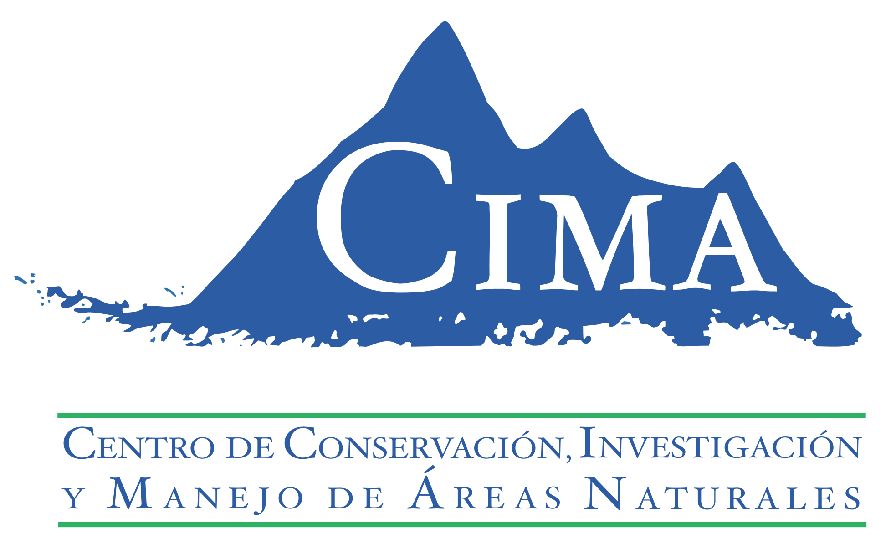
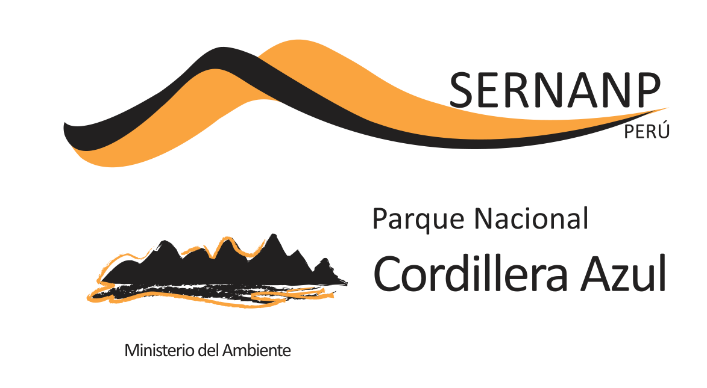
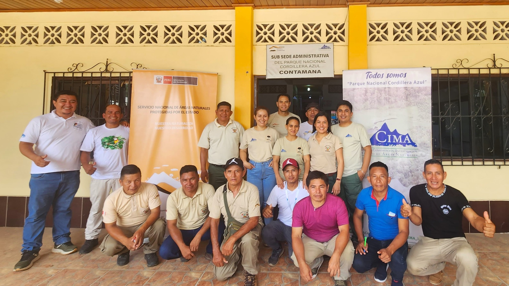

|  |  |
Primer Reporte Trimestral - 2024

Fecha: 28 junio 2024
I. INTRODUCCIÓN
Este primer reporte trimestral, se informa sobre las metas alcanzadas durante el periodo enero - marzo 2024, en el marco de los resultados del Contrato de Administración del Parque Nacional Cordillera Azul (CdA PNCAZ), correspondiente a los resultados intermedios, actividades y sub actividades plateadas para el quinquenio 2024 – 2028.
RESULTADOS CLAVE
Resultado 1
Este primer trimestre, se realizaron 186 patrullajes; 168 rutinarios y 18 especiales, en los 22 puestos de vigilancia (Tabla 2). De igual manera, a la fecha se cuenta con 61 casos presentados a la Fiscalía Especializada en Materia Ambiental (FEMA), vigentes y en etapa de investigación (Figura 1).
Además, 97 personas de 8 comunidades nativas y 28 centros poblados participaron en la vigilancia comunal (Figura 2), junto con los guardaparques. La inversión realizada total, por este apoyo comunal fue de S/.62, 868 (Figura 5), sólo en este primer trimestre; de los cuales 30 fueron mujeres y 67 varones (Figura 4).
El estado de conservación de la cobertura de bosque dentro del Parque, se mantiene intacta; en 1, 353, 141.06 hectáreas. Asimismo; 49.57 ha., se encuentran en recuperación dentro del parque; pues fueron afectadas por tala selectiva, extracción de madera y actividades ganaderas, que actualmente están controladas (Figura 7,Figura 8). Además, se reportó 316.87 ha., de perdida natural de bosque.
En la zona de amortiguamiento, 824.50 ha., de bosque fueron deforestados; siendo afectados 16 de los 18 sectores críticos de vigilancia; entre los anillos 1 y 5 km del parque. Los sectores críticos de vigilancia más afectados fueron los sectores Santa Ana, Ipururo, Pólvora y Shapaja. Además, fueron aperturados 6.39 km de trochas, en los sectores de Shapaja (4.52 km) y Santa Ana (1.87 km).
Las alerta de focos de calor disminuyeron 35% en comparación con el último trimestre 2023. Se registraron 816 alertas en la ZA del parque, de las cuales 30 fueron detectadas en el anillo 1 y 5 km. Ninguna alerta de foco de calor fue detectada dentro del parque (Figura 13).
Fueron realizados dos capacitaciones a los guardaparques, especialistas y técnicos de CIMA y SERNANP. La primera sobre primeros auxilios, uso y manipulación de suero antiofidico. La segunda fue un reforzamiento sobre los conocimientos teóricos y prácticos de la herramienta SMART mobile (Figura 14).
Respecto de las opiniones técnicas que realiza el Parque, 132 solicitudes fueron atendidas. Cuatro de estas opiniones fueron categorizadas con un impacto Alto (Figura 1).
Para este trimestre, la sede de Tarapoto CIMA continúa con la atención en el mantenimiento y refacciones de los Puestos de Vigilancia. Así como el equipamiento del personal guardaparque.
CIMA también apoya la instalación de letreros informativos comunales en la ZA del parque. Al trimestre 2024, se tienen instalados 36 letreros informativos; distribuidos en las cuatros sedes de intervención del proyecto (Figura 16).
Cuatro comunidades nativas de las etnias Kichwa, Shipibo-Konibo y Yine, y cinco centros poblados, han desarrollado con libertad sus actividades de subsistencia mediante la cacería y pesca, dentro del Parque. El promedio de edad de las personas que ingresan al parque, estuvo en un rango de 36 ~ 31 años; de 41 personas (Figura 18).
Los mamíferos obtenidos por la cacería suman 507 kg y fueron los más aprovechados; siendo el Majaz el más aprovechado (358 kg). Mientra que, las aves y peces; Pucacunga (5kg) y Carachama (44 kg), respectivamente, fueron aprovechados en menor cantidad (Figura 19).
En relación a los registros de fauna, se registraron 230 especies, en los 21 sectores de vigilancia y control del parque (Figura 23). De las cuales, 40 fueron plenamente identificadas con nombre científico y representan las especies más comunes de los registros, por ejemplo (Figura 22). Resaltan los registros de especies amenazadas y cuya presencia alienta la conservación del parque; ”Perro de Monte” Speothos venaticus, “Carachupa mama” Priodontes maximus, Puma concolor, “Oso de anteojos” Tremactos ornatus, “Tigrillo” Leopardus pardalis y “Maquizapa” Ateles chamek.
Resultado 2
Este trimestre, se comenzó con la evaluación de áreas prioritarias de investigación; que orientarán el desarrollo de investigaciones en las áreas de ecológica y conservación, medio ambiente y sociología, entre los principales. Además, se ha evaluado las iniciativas de conservación, que serán priorizadas para desarrollar una línea base de diversidad (Figura 25), que contribuirán a fortalecer la información científica para el turismo, así como su importancia para la conservación de especies.
Trabajos de investigación desarrollados por CIMA, dentro del Parque. A la fecha, CIMA, viene desarrollando una investigación sobre “Regeneración Natural del Bosque, dentro de áreas que fueron previamente deforestadas, en el sector Palomar-Shanshuico” y “Dinámica del bosque en el sector Chambirillo”. Ambas investigaciones se encuentran en etapa de análisis de información.
Elaboración de una ficha técnica técnica del “Boquichico” Prochilodus nigricans. Se concluyó que el “Boquichico” es importante en la alimentación de las comunidades asentadas entre los ríos Cushabatay y Pisqui. Además, estos lugares son claves, para la reproducción y migración de los peces (Figura 28), lo cual lo hace especialmente vulnerables a las actividades de pesca sin manejo.
El conjunto de datos de los procesos sociales del MUF y FOCAL son regularmente sistematizados. A la fecha, la unidad de información de CIMA, cuenta con un registro actualizado de todos estos procesos. Esta información es continuamente solicitada por profesionales de CIMA y SERNANP para reportes y análisis correspondientes. La información es guardada y protegida en el servidor institucional de CIMA, junto con los verificables que acompañan la información, en carpetas organizadas por temáticas.
Se instaló la nueva estación meteorológica. Entre enero y marzo 2024, se ha concluido con la instalación de la nueva estación meteorológica ClimaVUETM 50; el cual, es un Sensor Meteorológico Digital Compacto.
Al primer trimestre, se tienen registradas 16 investigaciones que se ejecutan desde el 2022 y se encuentran en distintas etapas de desarrollo (Tabla 6).
Se culminó la consultaría para medir los beneficios generados a las comunidades, en el marco del Fortalecimiento Organizacional de Capacidades Locales (FOCAL). De igual manera, se evaluó la efectividad de las intervenciones que CIMA, SERNANP realizan para apoyar el cumplimeinto de prioridades del Plan de Calidad de Vida, entre el 2008 - 2019. Para mostrar los detalles y resultados se ha elaborado un resumen ejecutivo.
Resultado 3
En este trimestre se apoyó a las organizaciones a tramitar las solicitudes para los permisos de instalaciones de letreros orientativos e informativos, para los atractivos turísticos. Así también, informar sobre el flujo de turismo a los atractivo turístico de Río Azul y Catarata del Otorongo, ante la Municipalidad distrital de Pucayacu.
En el mes de febrero, se realizó una exploración desde el PVC 16 Chambirillo (SM) hasta el PVC 106 Boca Pauya (LO). El objetivo fue explorar esta ruta, para evaluar su potencial turístico, en el mediano y corto plazo. En el marco del desarrollo turístico, del sector Chambirillo. Se han identificado, 10 puntos de interés para observación de fauna y flora en el área, y se observaron huellas de Puma, Paujiles, Tortugas, Ronsocos, Sachavaca, Cóndor real.
Se realizaron capacitaciones en Turísmo Sostenible y Buenas prácticas de manipulación de alimentos. Como parte de las actividades programadas en el Plan de Acción, de la Asociación Laguna de los Encantos, en la sede Tocache.
Se inició el desarrollo del plan de trabajo de Turísmo 2024, para el Valle del Aspuzana. El cual, involucra la participación activa de la Municipalidad del distrito de Pucayacu, DIRCETUR-Tingo María, la Cooperativa Bioaltura y CIMA Cordillera Azul.
Resultado 4
Se ha continuado con las actividades de Educación Ambiental No Formal (EANF). Así, 28 centros poblados participaron en distintas sesiones de aprendizaje, del manual de educación ambiental (Figura 31) , siendo un total de 759 personas, entre mujeres y varones (Figura 32).
Respecto de las normas de convivencia. Este trimestre, participaron 498 personas; 97 mujeres y 216 varones, de 10 centros poblados (Figura 33). El 23% de las comunidades concluyó con normas de convivencia, aprobadas en asamblea comunal (Figura 34).
Se trabajaron los Plan de Calidad de Vida, de las comunidades nativas Shipibo Konibo Manco Capac y Kichwa Anak Kurutuyacu, y 16 centros poblados. Además, se viene realizando el seguimiento de las comunidades programadas para este año, según los sectores; Tarapoto (Figura 35), Tocache y Contamana (Figura 36). Además, se realizaron actividades para elaboración y actualización de PCV no programdos (Figura 37).
Resultado 5
Acuerdos de Conservación en la sede Tocache. Este trimestre se elaboraron tres planes de trabajo, en el marco de los acuerdos de conservación con la cooperativa Agraria nueva visión LTDA, la Cooperativa de servicios especiales Bioaltura LTDA y a la Empresa cacaotera ARGE S.A.C.
A través del Fortalecimiento Organizacional Técnico Productivo (FOTP) se atendieron un total de 16 comunidades; nativas y centros poblados. En las comunidades que cuentan con PCV, se atendieron 14 comunidades; que representan 16 organizaciones; los cuales trabajan nueve distintos productos y servicios; como el café, cacao, artesanías y turismo, entre los más importantes. En este marco, se lograron concretar 21 hitos o logros, del trimestre (Tabla 9).
Se aprobaron tres fondos semillas, por un monto de 60 mil soles, cada uno. Además, se realizaron actividades de coordinación y apoyo técnico en la elaboración de 11 proyectos. Además, se ha concluído con la elaboración de cuatro proyecto, para los centros poblados de Consuelo, Bajo Chimbote, Inca Huasi y Lejía (Tabla 10). Estos deben ser evaluados para su aprobación el siguiente trimestre.
Respecto de la inversión financiera en Kulkao, hasta el primer trimestre, abonó la suma total de US$8,076.92 correspondiente al interés. Así también, la cuarta amortización de US$46, 153.85 de los US$600,000 prestados, por CIMA.
Resultado 6
Se ha comercializado 4,325 VCUs por un valor de US$25,582 autorizados con la carta N°0001-2024-SERNANP-J-SDG. De igual forma, esta pendiente por TOTALEnergies abonar los US$10´000,000, previa evaluación de las actividades implementadas en la hoja de ruta.
II. EVALUACIÓN DEL CUMPLIMIENTO DE ACTIVIDADES Y RESULTADOS DEL CONTRATO DE ADMINISTRACIÓN
Resultado 1: Se mantiene el estado de conservación del PNCAZ
Resultado Intermedio 1.1: La Cobertura vegetal de los ecosistemas del PNCAZ no sufren perdidas por causas humanas
Actividad 1.1.1 Actualización del Plan de Vigilancia y Control del PNCAZ
1.1.1.4 Soporte tecnico para el proceso de actualización del Plan de Vigilancia y Control
Durante el presente trimestre, continua la consultoría para la actualización de la Estrategia y el Plan de Vigilancia y Control del PNCAZA, realizada por el Antropólogo Cesar Bartra Navarro, se espera que los productos finales sean entregados para el segundo trimestre, para ello se coordinara con la Jefatura del PNCAZ a fin de realizar la revisión y respectiva validación.
Actividad 1.1.2 Apoyo a la vigilancia y Control efectivo
1.1.2.3 Patrullajes rutinarios, especiales y vigilancia en el PVC
En los meses de enero-marzo de 2024, se realizaron 186 patrullajes; 168 rutinarios y 18 especiales Se desarrollaron dos patrullajes especiales con mayor cobertura dentro del Parque, y 16 patrullajes especiales en la ZA Tabla 1. Mientras que, los demás fueron rutinarios cubriendo tanto el Parque y su ZA Anexo 1.1.2.3.
| Rutinarios en PNCAZ | Rutinarios en ZA | Especial en ZA | Especial en PNCAZ | N total Patrullajes | Mes |
|---|---|---|---|---|---|
| 10 | 45 | 4 | 1 | 60 | Enero |
| 8 | 47 | 5 | 1 | 61 | Febrero |
| 10 | 48 | 7 | 0 | 65 | Marzo |
Los 22 puestos reportaron el desarrollo de patrullajes en su sector. Los puestos PV Mishquiyaquillo y Pisqui recibieron apoyo comunal durante los patrullajes rutinarios. Es importante resaltar que, sólo 14 de los 22 puestos de vigilancia realizaron el trackeo espacial de su ruta de patrullaje. Sin embargo, los guardaparques ya cuentan con equipos GPSs y Smartphone, para realizar dicha actividad. Esto es una debilidad en los patrullajes y limita las acciones de vigilancia y control de la Jefatura del PNCAZ. Especialmente, al momento de orientar los patrullajes en las áreas de mayor presión y amenaza, en la ZA del parque (Tabla 2).
| Puesto de vigilancia | N° | Tracks | Rutinario | Especial |
|---|---|---|---|---|
| San José de Yanayacu | 3 | 0 | 3 | 0 |
| Robashca | 9 | 0 | 9 | 0 |
| Chimbadillo | 6 | 0 | 6 | 0 |
| Mishquiyaquillo | 11 | 2 | 11 | 0 |
| Chambirillo | 9 | 2 | 8 | 1 |
| Nuevo Loreto | 11 | 6 | 8 | 3 |
| Shanshuico | 10 | 7 | 7 | 3 |
| Ipururo | 9 | 3 | 9 | 0 |
| Cedro Sisa | 9 | 0 | 8 | 1 |
| Tornillal | 6 | 0 | 6 | 0 |
| Mojarra | 9 | 9 | 8 | 1 |
| Cachatigre | 7 | 0 | 7 | 0 |
| Piquiyacu | 10 | 1 | 8 | 2 |
| Pólvora | 9 | 3 | 7 | 2 |
| Shapaja | 8 | 0 | 7 | 1 |
| Pucayacu | 12 | 4 | 11 | 1 |
| Santa Ana | 8 | 3 | 7 | 1 |
| Pisqui | 8 | 2 | 8 | 0 |
| Boca Noaya | 8 | 2 | 7 | 1 |
| Boca Pauya | 7 | 0 | 7 | 0 |
| Nuevo Dorado | 7 | 4 | 7 | 0 |
| Santa Catalina | 10 | 3 | 9 | 1 |
| Total | 186 | 51 | 168 | 18 |
1.1.2.4 Combate de incendios y otros desastres naturales
1.1.2.6 Apoyo legal para la gestión
Entre el 2015 y 2024, la asistencia legal de CIMA-SERNANP ha presentado 81 casos a la Fiscalía Especializada en Materia Ambiental (FEMA), de Moyobamba, Juanjui, Nauta, Alto Amazonas, Ucayali y Huánuco. Actualmente, 61 casos se encuentran vigentes en etapa de investigación (Figura 1). El avance detallado de los casos en etapas de investigación, están descritos en el Anexo 1.1.2.6.
1.1.2.7 Digitalización, sistematización y control de informes de Guardaparques
Durante el presente trimestre, por solicitud de la jefatura del PN Cordillera Azul, se ha vuelto a contratar a Raissa Karel Valera García, con el objetivo de apoyar en la organizar y sistematizar la información técnica vinculada a actividades que realizan los Guardaparques. Estas son; patrullajes, vigilancia participativa, eventos de difusión, registro de beneficiarios del aprovechamiento de recursos naturales, denuncias ambientales, mantenimiento de infraestructura de los puestos y LIL proveniente de los 22 Puestos de Vigilancia y Control. Es importante mencionar, que la unidad de SIG de CIMA, coordina las actividades de esta consultora, además de revisar y hacer las correcciones necesarias, de los productos finales, que son entregados.
Actividad 1.1.3 Apoyo a la Vigilancia Comunal
1.1.3.1 Salario de Apoyos comunales
En este trimestre participaron 97 personas en la vigilancia comunal, apoyando a 22 puesto de control y un refugio “Palomar”. Participaron ocho comunidades nativas (21 personas); Santa Rosa y Santa Rosita de Apua (Sede Aguaytía), Nuevo Eden, Manco Capac (Sede Contamana) y Callanayacu, Chambira y Mushuck Llacta de Chipaota (Tarapoto); y 28 centros poblados (75 personas) de las cuatro sedes ( Figura 2). Un registro detallado, de las personas, procedencia, así como el pago realizado por CIMA-SERNANAP para su apoyo en la vigilancia y control, pueden ser revisados en el Anexo 1.1.3.1.
El monto total invertido por el PN Cordillera Azul, en la vigilancia comunal fue de S/.62, 896.00, de los cuales S/. 27, 900.00 fueron para las Comunidades Nativas y S/. 34, 996.00 para los Centros Poblados, que participaron en las actividades de vigilancia y control del parque, entre enero y marzo del presente año (Figura 3).
Un total de 30 mujeres (F) y 67 varones (M) participaron en la vigilancia comunal. Tres mujeres y 10 varones provienen de comunidades nativas. Mientras que el mayor número de mujeres fueron de centros poblados ubicados en San Martín y Huanuco; sedes Tarapoto y Tocache (Figura 4). Estas diferencias también se han visto reflejadas en los pagos que se realizaron, de acuerdo con el sexo de las personas (Figura 5).
1.1.3.2 Conformación de Comités de Vigilantes Comunales
1.1.3.3 Fortalecimiento e implementación de Comités de Vigilantes y Rondas Campesinas y Nativas
En Santa Rosa de Shapaja se dio asistencia técnica para el análisis FODA y la elaboración de su plan de trabajo. Además, se apoyó con el servicio de contratación de personal para construir una puerta y tres ventanas, como parte de la implementación del local de la ronda campesina (Anexo 1.1.3.3).
1.1.3.4 Participación en patrullajes liderados por el SERNANP (Apoyos comunales eventuales)
Apoyo en la vigilancia y control por los técnicos de campo de CIMA
En el sector Tocache, se ha participado en 10 patrullajes rutinarios, en los subsecotres de Pólvora, Pucayacu y Aspuzana. Estas áreas fueron; Gosen, Alto San Pedro, San Juan km 33, Nueva Unión (febrero, marzo), Alto Balsayacu, Rio Azul Ibañez, Consuelo (sector rio seco), Jorge Basadre (sector Cerro Quemado) y Montaña Verde.
1.1.3.5 Víveres, combustible para realización de patrullajes comunales
En el presente trimestre, la administración de cada sede atiende los diferentes requerimientos relacionados a víveres y combustibles, para la realización de los patrullajes comunales.
Actividad 1.1.4 Vigilancia de Bosques Colindantes
1.4.1.1 Salario de custodios forestales para la CCPC
Durante el primer trimestre, se contrató un total de seis custodios; dos custodios por mes. Estas personas son comuneros de los poblados de Nuevo San Martín y Fernando Belaunde Terry, asentadas en los límites de la Concesión de Conservación Pauya Cushabatay (CCPC), Anexo 1.4.1.1.
1.1.4.2 Víveres, combustible y otros para patrullaje en la CCPC
Durante el primer trimestre, se ha brindado víveres, combustible y otros insumos a los custodios con la finalidad que puedan realizar sus actividades programadas.
1.1.4.3 Digitalización, sistematización y análisis de los informes de patrullajes
En el marco de las acciones de vigilancia y control de la jefatura del PN Cordillera Azul y la Concesión de Conservación Pauya Cushabatay, este trimestre, se realizaron actividades de vigilancia y control en coordinación con los guardaparques del Puesto de Vigilancia 106 - Boca Pauya. Estas acciones se realizaron en los sectores del río Cushabatay y Pauya hasta los límetes del parque. Caseta de Investigación de la Concesión de Conservación Pauya Cushabatay.
Actividad 1.1.5 Vigilancia Remota y Sobrevuelos
1.1.5.1 Elaboración de protocolo de vigilancia remota
Durante el presente trimestre, el Área SIG ha venido revisando el protocolo de vigilancia remota trabajada con la Unidad de Teledetección y con Jefatura a fin de contar con una versión actualizada y de acorde a la realidad del Parque.
1.1.5.2 Monitoreo del Estado de Conservación y recuperación de sitios alterados de manera remota
Al primer trimestre 2024, el área intacta del PN Cordillera Azul, se mantiene en 1, 353, 141.06 hectáreas de bosque intacto; 21.95 hectáreas fueron deforestados entre el 2019 y 2024 por acción del hombre, para apertura de chacras y extracción selectiva de madera. Por otro lado, 27.62 hectáreas pertenecen al área por recuperar “Ganadero Suarez” cuya deforestación se ocasionó para el pastoreo de vacas, hace más de 20 años. Estas áreas suman un total de 49.57 hectáreas, que actualmente se encuentran en recuperación del PN Cordillera Azul (Anexo 1.1.5.2).
La deforestación acumulada al interior del parque es 23.60 ha, de bosque primario. Este desbosque está ubicado en el sector de vigilancia y control Ipururo - subsector Shanshuico. Es en este subsector se identificó deforestación por tala ilegal selectiva, siendo el área afectada 0.16 hectáreas de bosque primario (Figura 6, Anexo 1.1.5.2). El equipo SIG-Cima, elaboró una ficha de verificación de la alerta, que fue llenada por los guardaparques in-situ, con los detalles de la deforestación (Ficha).
Áreas de recuperación dentro del PN Cordillera Azul
Se continúa con el monitoreo del área de recuperación “Ganadero Suarez”, el cual mostró una recuperación de 0.28 hectáreas, en relación al último trimestre del 2023 (Figura 7). De igual forma, hay una recuperación del bosque, en el sector Palomar (Figura 8); el cual fue deforestado entre el 2020 y 2022 (deforestación acumulada de 8.8 hectáreas). Estas áreas, han mostrado una recuperación de 1.66 hectáreas al presente trimestre 2024.
Perdida natural de bosque en el PN Cordillera Azul
La pérdida natural de bosque en este primer trimestre fue de 316.87 Ha. Los sectores de vigilancia más afectados fueron Pucayacu (0.32 ha.), Santa Ana (2.22 ha.), Boca Pauya (13.10 ha.). Mientras que, fuera de los 18 sectores críticos, la pérdida natural de bosque suma 301.23 ha, siendo las zonas más afectadas, las cabeceras del río Biavo y Shapaja (Figura 9).
Descripción de la deforestación en la Zona de Amortiguamiento del PN Cordillera Azul
En la zona de amortiguamiento, se registró un total de 824.50 hectáreas deforestadas al primer trimestre 2024 - que incluye los anillos de intervención 1 y 5 km, alrededor del PN Cordillera Azul (Figura 10).

En el anillo de intervención de 1 km, se ha identificado un total de 19.54 ha de deforestación, localizadas en 8 de los 18 sectores críticos de vigilancia y control (Anexo 1.1.5.2 - sección “deforestación en la ZA”). En el buffer de 5 km, en 16 de los 18 sectores, la deforestación alcanzó un total de 238.14 ha; siendo los más afectados los sectores de Santa Ana, Ipururo y Polvora y Shapaja (Figura 11).
Apertura de vías en la ZA del Parque
En el primer trimestre 2024, se aperturo 6.39 kilómetros de vías (trochas) en la zona de amortiguamiento del PN Cordillera Azul, en los sectores Shapaja (4.52 km) y Santa Ana (1.87 km), ver Anexo 1.1.5.2 - sección “apertura de trochas”. Entre el 2013 y 2023, se han abierto vías dentro de Concesiones (principalmente forestales) y fuera de ellas, en el ámbito de la ZA del parque, el cual representa 1721.03 km de caminos (Figura 12).
Apertura de vías más allá de los 5 km de buffer, en la ZA
Una parte significativa de la deforestación está relacionada con la apertura de trochas en la zona de amortiguamiento, principalmente con fines de aprovechamiento forestal, ya sea dentro de una concesión o fuera de esta. Estas trochas tienen la finalidad de conectar las concesiones con la vía principal más cercana. Destacan los sectores de Santa Ana (220.77 km) y Nuevo Dorado - Santa Catalina (380.14 km) como las áreas con mayor deforestación por apertura de vías (Anexo 1.1.5.2); la mayoría de estas trochas (67%) se encuentran fuera de las concesiones forestales, y son utilizadas para el transporte de madera.

Alertas de focos de Calor
Durante el primer trimestre del 2024 no se registraron alertas de focos de calor, dentro del parque (Figura 13). Sin embargo, en la ZA se registraron 816 alertas de focos de calor; 30 alertas fueron detectadas en los anillos 1 (n=1 alerta) y 5 km (n= 29 alertas). Respecto del último trimestre 2023 (octubre-noviembre-diciembre), las alertas disminuyeron 35% en este primer trimestre.

Opiniones técnicas
En el proceso de emisión de opiniones técnicas, el Área SIG-CIMA realiza una evaluación integral de los proyectos en consulta, teniendo en cuenta múltiples factores clave. Esto incluye la revisión de la conformidad con los requisitos legales, un análisis detallado de la cobertura vegetal en las áreas de interés, consideración de aspectos físicos del entorno y la identificación de zonas que restringen ciertos usos, como los bosques de producción permanente (BPP).
Durante este trimestre, el Área SIG-CIMA en coordinación con la Jefatura del SERNANP recibió y atendió 132 solicitudes, en el periodo de enero a marzo 2024, los cuales han sido evaluados, según su impacto potencial (Tabla 3). Estas opiniones se dividen en Opiniones Técnicas (26 solicitudes) y Consultas Generales (106). En el Anexo 1.1.5.2 se detallan los tipos de opiniones técnicas y solicitudes generales.
| Solicitudes totales | N=132 | Impacto potencial |
| Opiniones técnicas | N=26 | |
| Concesiones, Plan de manejo forestal, DEMA | 3 | Medio |
| Instalación de Grifos | 1 | Bajo |
| Actividad acuícola (piscigranjas) | 2 | Bajo |
| Red de distribución de telecomunicaciones (telefonía, internet, radio, otros) | 0 | Medio |
| Petitorio minero | 2 | Medio |
| Proyecto de cultivo y/o asistencia técnica (plátano, cacao, café, bambú, arroz, otros) | 0 | Alto |
| Muro de Protección, defensa ribereña y/o recuperación de faja marginal de rio | 1 | Medio |
| Estación de telecomunicaciones (telefonía, internet, radio, otros) | 3 | Bajo |
| Uso de agua para actividad agrícola y/o riego | 1 | Medio |
| Construcción de infraestructura (instituciones, hospital, embarcadero, otros) | 1 | Bajo |
| Construcción y/o mantenimiento de caminos (trocha, puente) | 3 | Medio |
| Instalación de servicios y/o sistemas para distribución eléctrica (paneles, cables, otros) | 3 | Medio |
| Construcción de infraestructura ecoturística (albergues) | 1 | Bajo |
| Establecimiento de bosque local, concesión para conservación, reforestación y/o restauración | 0 | Bajo |
| Extracción de aceite de palma | 0 | Medio |
| Instalación o modificación de agua y desagüe | 4 | Bajo |
| Mejoramiento de capacidades para crianza de animales menores | 0 | Bajo |
| Construcción y/o mejoramiento de drenaje pluvial | 1 | Bajo |
| Solicitudes generales | N=106 | |
| Consultas generales | 56 | Bajo |
| Alertas tempranas (mensuales) focos de calor - SERFOR | 10 | Alto |
| Caso Puerto Franco | 0 | Medio |
| Caso Central Hidroeléctrica Alto Biavo | 0 | Medio |
| Cultivos ilícitos | 0 | Alto |
| Incendio forestal poblado Jorge Basadre | 0 | Alto |
| Otros formatos (no mapa) | 0 | Bajo |
| Ubicación-General | 2 | Bajo |
| Capacitaciones | 3 | Bajo |
| Deforestación | 29 | Alto |
| Registro de SMART | 6 | Bajo |
1.1.5.3 Equipamiento para la vigilancia remota (PC,drones, otros)
1.1.5.4 Sobrevuelos
Actividad 1.1.6 Capacitación del personal guardaparque, especialista y técnicos de campo
1.1.6.1 Elaboración de un plan quinquenal de capacitaciones de campo
1.1.6.2 Capacitación de guardaparques, especialistas y técnicos
Capacitación en el uso y manipulación de sueros antiofídicos, en la sede Tarapoto de CIMA-SERNANP. La capacitación estuvo dirigido al personal administrativo, especialistas y guardaparques de CIMA-SERNANP y los técnicos de campo de CIMA; siendo un total de 20 compañeros de trabajo. Dos profesionales de la salud dictaron la capacitación; un licenciado y un técnico en enfermería (Anexo 1.1.6.2)
Durante la sesión se abordaron tres temas específicos:
A pedido del equipo técnico de campo, se trató sobre la prestación de primeros auxilios en caso de fracturas por accidentes de tránsito o por algún incidente en campo como caídas durante caminatas en campo o por el impacto de algún objeto como por ejemplo un árbol.
Manipulación y aplicación correcta de medicamentos inyectables, ya sea intra muscular o intra venoso.
Manipulación y correcta aplicación de suero antiofídico.
Recomendaciones
El suero antiofídico debe ser aplicado intravenosa - No Intramuscular. En este sentido, además del suero y el diluyente, debe utilizarse una solución de cloruro, para mezclar el suero.
Es necesario aplicar al paciente, una inyección de dexametasona y clorfenamina previo a la aplicación del suero antiofídico preparado. Esto es importante para evitar reacciones secundarias alérgicas, que puedan poner en peligro la vida del paciente; especialmente si tienen una condición previa como diabetes, hipertensión arterial, por ejemplo.
Resultados de la capacitación
La administración de la sede entrego un kit, que contiene el suero antiofídico y el diluyente, y los otros implementos necesarios.
Según las recomendaciones de los capacitadores, los técnicos de campo y guardaparques en sus puesto de vigilancia, deben tener siempre un kit completo específico para atender emergencia por mordeduras de serpientes. De esta manera, una lista de requerimiento está siendo solicitada (Tabla 4).
| Kit | Unidades requeridas |
|---|---|
| Dexametasona | 1 |
| Clorfenamina | 1 |
| Suero antiofídico | 1 |
| Agua destilada | 2 |
| Cloruro de Sodio 100 ml | 2 |
| Equipo de venoclisis | 2 |
| Cateter n°22/24 | 2 |
| Llave triple vía con extensión | 2 |
| Esparadrapo | 1 |
| Ligadura | 1 |
| Guantes quirúrgicos | 2 |
| Jeringa 10 ml | 2 |
| Aguajas n°18 | 2 |
| Alcohol 1L | 1 |
| Paquete de algodon | 1 |
| Recipente de tapa hermetica | 1 |
Capacitación de SMART en el PN Cordillera Azul
La capacitación se ha realizado con el objetivo de reforzar los conocimientos teóricos y prácticos de la herramienta SMART Mobile, en las sedes de Tarapoto, Aguaytía y Contamana (Figura 14). Participaron un total de 40 personas, entre guardaparques, especialistas y técnicos de campo de CIMA y SERNANP (Anexo 1.1.6.2).
Actividad 1.1.7 Construcción, refacción, equipamiento y mantenimiento de Puestos de Vigilancia y Control
1.1.7.1 Condiciones habilitantes para la construcción (saneamiento, opinión técnica y otros)
1.1.7.2 Construcción de PVC
En este trimestre, se ha construido un refugio en el sector Palomar - Shashuico y se continúan con la construcción del Puesto de Vigilancia y Control del Pisqui, el cual se tiene programado concluir el mes de abril, del presente año (Anexo 1.1.7.2).
1.1.7.3 Refacción parcial de PVC
En la sede Tarapoto, se realizaron las siguientes acciones:
Construcción de nuevos servicios higiénicos en el PVC 19.
Construcción de servicios higiénicos en el PVC 19.
Mejoramiento de acceso a los SSHH del PVC 21.
Acondicionamiento de un dormitorio en el PVC 14.
Reparación y mantenimiento del biodigestor y colocación de tanque de agua subterráneo del PVC Nuevo Loreto.
1.1.7.4 Mantenimiento de Equipos de PVC (SERNANP-CIMA)
En el presente trimestre, la administración de cada sede atiende los diferentes requerimientos relacionados al mantenimiento de equipos de los puestos de vigilancia, cuando estos son requeridos. En las metas físicas y financieras se detallan montos globales.
1.1.7.5 Equipamiento de PVC
Los puestos de vigilancia y control, dentro de la jurisdicción de la sede Tarapoto, han sido equipados con lo siguiente:
Cama, colchón y juego de sábanas al PVC Piquiyacu.
Cama, colchón y juego de sábanas al PVC 18.
Cama, colchón y juego de sábanas al PVC 21.
Dos mesas de madera y 6 sillas para el PVC 16.
Dos camas tarimas, 3 colchones, 3 mosquiteros y 3 juegos de sábanas para el PVC 11.
Dos camas tarimas, 2 colchones, 2 mosquiteros, 2 colchas polares y 2 juegos de sábanas para el PVC 14.
Cinco protectores de colchones y 5 mosquiteros para personal del PVC Shanshuico y el refugio Palomar.
Una cocina de mesa para el PVC Robashca (para ser asignado a Callanayacu).
Diez unidades de sueros antiofídicos para los PVC
1.1.7.6 Equipamiento para personal GP
En la sede Tarapoto, se equipó al personal guardaparque con lo siguiente:
Implementación con equipos de campo (carpas, bolsas de dormir, colchonetas, colchonetas, linternas, botas, capotas para lluvia) a personal guardaparque, recientemente incorporados a la gestión.
31 pares de botas de jebe para personal guardaparque.
1.1.7.7 Hitos y letreros (LIL, LIZA, LIC)
En este trimestre, se sinceró el número de letreros comunales instalados en las comunidades de la ZA del parque. Para ello, el equipo SIG en coordinación con la coordinación de las cuatro sedes; Aguaytía, Tocache, Tarapoto y Contamana, utilizaron una ficha digital predeterminada en el aplicativo KboCollect, con la finalidad de facilitar el registro en tiempo real, además de permitirles, guardar fotos (Figura 15) y obtener un registro espacial de la ubicación de los letreros (Figura 16). Revisar el Anexo 1.1.7.7, para un registro detallado de la ubicación espacial y fotos, de los letreros comunales.
Hasta la fecha, desde el 2022, se han instalado 36 letreros informativos comunales (Figura 16), en las sedes de Tocache (18), Tarapoto (16) y Aguaytía (2). De los cuales, 33 fueron instalados en comunidades mestizas y tres en comunidades nativas; Santa Rosa de Aguaytía y Santa Rosita de Apua, en Aguaytía. Una en Tarapoto; la comunidad Unión de Corotoyacu.

Resultado intermedio 1.2. Las especies cinegéticas se mantienen en los sectores de uso al interior del PNCAZ
Actividad 1.2.1. Monitoreo de especies cinegéticas
1.2.1.1 Elaboración de protocolo de especies cinegéticas
Actividad 1.2.2. Monitoreo del uso de fauna
1.2.2.1 Registro oficial de usuarios de caza y pesca
Para este año, se está desarrollando una base de datos del registro de usurarios, para realizar actividades de cacería y pesca de subsistencia, principalmente. Así, registramos 41 personas provenientes de 4 comunidades nativas y 5 centros poblados, ubicados en la ZA del PN Cordillera Azul. El promedio de edades, en el centro poblado fue 36 años (n=24 ind.), y en las comunidades nativas; los Kichwas y Shipibo-Konibo el promedio fue de 31 años (n=11 ind. y 5 ind., respectivamente). Sólo la etnia Yine, de la comunidad Libertad, se registró una persona de 48 años (Figura 17). Además, un usuario de 36 años se identificó procedente de la ciudad de Tarapoto, ingresando por el Puesto Misquiyaquillo (Anexo 1.2.2.1). A la fecha, la mayoría de personas que ingresan al parque por subsistencia, no sobrepasa los 36 años.
Se registraron 13 lugares dónde las comunidades realizaron la cacería y pesca ( Figura 18). Siente lugares de destino, son aprovechados por personas que provienen de centros poblados y seis lugares, por comunidades nativas. De las tres etnias nativas registradas este trimestre, los Kichwa utilizaron más lugares en comparación con Shipibos-Konibos y Yines ( Figura 18). Resalta el sector Ipururo, dónde se hizo aprovechamiento tanto en la ZA y dentro del Parque; siendo el lugar con mayor número de personas (13 ind.).
1.2.2.2 Establecimiento y ajuste de cuotas y normas de aprovechamiento
1.2.2.3 Registro de aprovechamiento de fauna
Este trimestre, registramos nueve especies de importancia para la cacería y la pesca de subsistencia. Los guardaparques, registraron 32 usuarios, que ingresaron al Parque, por motivos de caza y pesca. El “Majas” fue la especie más importante en términos de cacería en este trimestre; 16 usuarios aprovecharon un total de 358 kg (n= 51 ind.). Los mamíferos extraídos por cacería, representan 507 kg y las aves “Pucacunga” 5 kg. Mientras que, respecto a la pesca, la”Carachama” fue la única que se registro como aprovechada; un total de siete personas pescaron 44 kg (Figura 19). El Anexo 1.2.2.3 se presenta el conjunto de datos, con el detalle de los usuarios, su procedencia y el número de especies cazadas y pescadas.
Finalmente, 375 kilogramos fueron extraídos por caza y pesca por 19 individuos que provienen de un centro poblado. Mientras que, las etnias Kichwa, Shipibo-Konibo y Yine extrajeron 106, 40 y 35 kg, para su subsistencia, respectivamente (Figura 20).
1.2.2.4 Elaboración de materiales para la difusión de cuotas y normas de aprovechamiento
Actividad 1.2.3 Registro de Fauna Silvestre
1.2.3.1 Registro de fauna a cargo de GP
En los 21 sectores de vigilancia y control, se registraron cerca de 230 especies de fauna silvestre (mamíferos, roedores, aves, anfibios, reptiles, peces) que los guardaparques distinguen por nombre común. Sin embargo, estos registros, no están plenamente identificados al 100%, porque son especies de aves, roedores y anfibios, que no son fáciles de identificar en campo. De este número total, se tienen plenamente identificados 40 especies, que son especies comunes, principalmente mamíferos, aves y reptiles que son fácilmente identificables.
Todos estos registros provienen de los patrullajes rutinarios, realizados entre la zona de amortiguamiento y dentro del parque. Los sectores con mayores registros provienen de Ipururo (20 spp., 52 registros) y Shanshuico (17 spp., 40 registros). Mientras que los sectores en Piquiyacu, Cachatigre y Nuevo Dorado tuvieron registros similares, aunque un menor número de especies (Figura 21).
De acuerdo con la distribución de los 22 puestos de vigilancia y control, las especies de fauna más frecuentes, fueron el “Vendado” Mazama americana, ”Sachavaca” Tapirus terrestris, ”Majas” Cunniculus paca, ”Sajino” Peccari tajacu, ”Paujil” Mitu tuberosum, Penelope jacquacu, ”Otorongo” Panthera onca y ”Tucan” Rhamphastos tucanus (Figura 22). Estas especies fueron avistadas en más de 10 sectores de vigilancia y control; es decir representan las especies más comunes en los patrullajes rutinarios. Las otras especies, no son tan comunes, y algunas sólo fueron registradas en cinco de los 22 puestos de vigilancia. En el Anexo 1.2.3.1 se indican la lista total de especies, y el número de avistamientos por puestos, 11 de estas especies sólo fueron avistadas en un puesto, 16 especies en dos puestos y nueve en cuatro puestos. Resaltan los registros de”Perro de Monte” Speothos venaticus, “Carachupa mama” Priodontes maximus, Puma concolor, “Oso de anteojos” Tremactos ornatus, “Tigrillo” Leopardus pardalis y “Maquizapa” Ateles chamek.
Considerando el número total de individuos (n=3253 ind.) y especies registrados por nombre común (n =~230 spp) - que incluye las 40 especies identificadas - encontramos que los puestos con mayor registro de individuos fueron realizados en Mojarra, Ipururo, Chimbadillo y Cachatigre. Nueve puestos, presentaron más de 100 registros. Mientras que, el puesto San José de Yanayacu presentó el menor número de individuos (Figura 23).
Finalmente, considerando el número total de especies identificadas (~230 spp) y el número de individuos observados en cada sector de vigilancia y control, encontramos que a medida que aumenta el número de individuos, tenemos más oportunidad de registrar más especies de fauna ( Figura 24). También se observa que, cuando alcanzamos un registro cercano a 200 ~ 300 individuos, el número de especies no aumenta más. Lo cual podría indicar que el máximo número de especies que se pueden registrar durante los patrullajes rutinarios, es ~230 especies, y este no aumentará pasado los 400 individuos (~400 ind., Figura 24). Sin embargo, el patrón observado en la Figura 24 debe ser tomado con precaución. Otras variables deben tomarse en cuenta para monitorear la comunidad de especies, como las actividades humanas cercanas, la localización, tiempo y distancia de los patrullajes rutinarios. Sólo la investigación vinculada a las actividades de gestión, orientarán mejores resultados, para medir la efectividad de nuestras acciones y progresos.
1.2.3.3 Sistematización y análisis en SMART
Este trimestre, se continúa con la sistematización de los registros de los guardaparques a través de la plataforma SMART.
Resultado intermedio 1.3 Se fortalece la gobernanza del PNCAZ con los actores relevantes
Actividad 1.3.1. Seguimiento al Contrato de Administración
1.3.1.1 Contrato de Administración (Comisión de Seguimiento)
Durante el presente trimestre, no se desarrolla ninguna reunión de la comisión de seguimiento debido a que la Comisión Ejecutiva del Comité de Gestión no esta vigente, toda vez que su periodo de vigencia fue hasta agosto del 2023. Y por lo antes manifestado, no ha sido posible actualizar los miembros de la Comisión de Seguimiento del Contrato de Administración del PNCAZ.
1.3.1.2 Seguimiento a los acuerdos
Actividad 1.3.2 Fortalecimiento del Comité de Gestión del PNCAZ con grupos de interés integrados
Actividad 1.3.3 Fortalecimiento de capacidades a las CCNN y a las organizaciones indígenas de la ZA del PNCAZ
1.3.3.1 Convenio con las organizaciones indígenas (agrupa varias comunidades)
El 28 de febrero del presente año, en los ambientes de la oficina de CIMA Aguaytía, se llevó a cabo una reunión con el presidente (e) Marcelo Odicio Angulo de la Federación Nativa de Comunidades Kakataibos – FENACOKA, y con su equipo técnico, donde se trató temas relacionados a las actividades que CIMA viene realizando en las CCNN bases de la FENACOKA, ubicadas en la zona de amortiguamiento del Parque Nacional Cordillera Azul.
Posterior a esta reunión y de acuerdo a lo acordado de forma verbal y en marco al convenio entre CIMA y FENACOKA, se compartió a la federación una copia de los siguientes documentos: - “Mejoramiento de las infraestructuras para el servicio de alojamiento de la asociación de Turismo Ecológico Saludable Ñuina Kama Jisti de Yamino”, (estado: ejecutado) - “Implementación y mejora de capacidades para la producción de artesanías de calidad y el incremento de las ventas de la Asociación de Artesanas Kari Isa Xanu de Yamino”, (estado: en proceso de ejecución) - Convenio de Colaboración Interinstitucional entre FENACOKA y CIMA. - Catálogo: “Artesanía Kakataibo 2023, de Yamino para el mundo” en digital y 15 unidades en físico. Por su parte, el presidente de la federación reafirmó su compromiso de seguir trabajando en el marco del respeto institucional entre CIMA y FENACOKA, y mencionó que CIMA es un aliado importante para lograr concretar los objetivos comunes de sus comunidades ubicadas en la ZA del PNCAZ bases de la federación.
En marco al “Convenio de interinstitucional entre la Federación Nativa de Comunidades Cacataibos (FENACOCA) y el Centro de Conservación, Investigación y Manejo de Áreas Naturales – Cordillera Azul (CIMA – Cordillera Azul)”, se realizó la siguiente actividad: - En referencia a la solicitud mediante CARTA N°001-2024-MOA-FENACOKA-PA de la FENACOKA presentada a CIMA Cordillera Azul, donde solicita donación de materiales de escritorio para la oficina de FENACOKA, se hizo entrega en calidad de donación de 10 artículos para uso de la Federación (Tabla 5).
| Artículos donados | Cantidad |
|---|---|
| Papel bond A4 | 2 millares |
| Folder manilla A4 | 2 paquetes (25 unidades x paquete) |
| Tinta para impresora EPSON - L6270 | 4 unidadea (negro, magenta, cyan y yellow) |
| Plumón acrílico | 1 docena |
| Grapas | 1 cajita |
| Tijera mediana | 1 unidad |
| Chinches | 1 cajita |
| Mota para pizarra acrílica | 1 unidad |
| Archivadores | 6 unidades |
| Cinta masketin | 3 cinta masking |
Se entregó estos materiales el día 15 de febrero del 2024, en los ambientes de la oficina de FENACOKA. Participaron por parte de la FENACOKA Sr. Marcelo Odicio Angulo, presidente (e) y de CIMA Sr. Juan Flores Fabian, coordinador regional. Este apoyo es con la finalidad de fortalecer a la FENACOKA y contribuir con el desarrollo de sus comunidades bases que se encuentran en la ZA del PNCAZ como las CCNN de Mariscal Cáceres y Yamino (etnia Kakataibo) y Nuevo Azul (etnia Ashaninka).
1.3.3.2 Elaboración del plan de capacitaciones
Actividad 1.3.4
1.3.5. Actualización de Plan Maestro (2024-2028)
1.3.5.1 Evaluación y diagnóstico (se necesitan 4 reuniones)
Esta actividad se ha programado para el 2025. Sin embargo, para el tercer trimestre 2023 vamos iniciar la organización, sistematización y diagnóstico de la información base, que permitirá agilizar el proceso de actualización.
Resultado 2: Se promueve la investigación priorizando al interior del ANP y se usa la información en la gestión del PNCAZ y su ZA
Resultados Intermedio 2.1 Investigaciones priorizadas realizadas, cuyos resultados y recomendaciones son incorporadas en la gestión del PNCAZ
Actividad 2.1.1. Promoción de Investigaciones prioritarias para la gestión del PNCAZ y su ZA
2.1.1.1. Conformación de un comité de investigadores que ayuda a identificar y promover investigaciones dentro del PNCAZ y su ZA.
2.1.1.2 Evaluación, actualización e identificación de las prioridades y vacios de información en el PNCAZ y su ZA, en el marco de la actualización del Plan Maestro
En octubre 2023, se definió una lista de prioridades de investigación por temática, en concordancia con las ya definidas en el Plan Maestro 2017 - 2021, adicionando aquellas investigaciones que se han realizado en la Zona de Amortiguamiento y dentro del parque, posterior al Plan Maestro. Esta lista fue desarrollada en CIMA y compartida con la jefatura del PN Cordillera Azul, quién dio su visto bueno.
Esta nueva lista, es una línea base que servirá para mantener y actualizar las líneas de investigación, considerando su contribución a la gestión, en el corto, mediano y largo plazo. Así como aquellas, que son de interés para la comunidad científica nacional e internacional, que desea realizar investigaciones dentro y fuera del parque (Anexo 2.1.1.2). Es bajo estas líneas de investigación, que entre septiembre y diciembre 2023, se realizó el primer concurso de becas de investigación.
Junto con la conformación del comité de investigadores y participación de la jefatura, se trabajarán las prioridades, el cual se incluirá en la actualización del nuevo Plan Maestro.
2.1.1.3. Concurso anual de investigaciones prioritarias dentro del parque y su ZA (nota: el comité evalúa las propuestas).
Esta actividad se iniciará en los siguientes trimestres del año 2024. Se viene trabajando en nuevas bases y objetivos de la convocatoria.
2.1.1.4. Establecer convenios con instituciones de investigación *Como meta se propone dos proyectos financiados.
Actividad 2.1.2. Monitoreo de la vegetación y fauna silvestre del PNCAZ
Identificación de sitios prioritarios para generación de base de datos por su importancia turística y biológica en el Parque y su ZA
En este primer trimestre, se está evaluando áreas prioritarias de investigación, para generar información ecológica, ambiental y social, de las iniciativas de conservación, en la Zona de Amortiguamiento del parque (Figura 25, Anexo 2.1.2). Estas áreas serán priorizadas, para realizar una línea base de diversidad, que contribuirán a fortalecer la información científica para el turismo, así como su importancia para la conservación de especies. Esta información será parte de la propuesta turística y de conservación de las comunidades que administran los recursos, para aumentar su oferta y conseguir fondos. Además de tener una línea base para el monitoreo de los objetos de conservación, que justificarán las actividades turísticas y la conservación del paisaje.

Monitoreo de la vegetación y fauna silvestre en áreas degradadas en recuperación en el PNCAZ y la ZA.
Remedición de Parcelas en Palomar. Cima viene realizando dos trabajos de investigación dentro del parque; uno para conocer la “Regeneración Natural del Bosque, dentro de áreas que fueron previamente deforestadas, en el sector Palomar-Shanshuico” y el segundo para estudiar la “Dinámica del bosque en el sector Chambirillo, en una parcela permanente de vegetación” (Anexo 2.1.2).
La investigación de regeneración natural del bosque, inició en diciembre-enero 2022 para establecer una línea base del crecimiento de las plantas, en hectáreas de bosque previamente deforestados (cuatro áreas deforestadas entre 2020 - 2022). El enero del 2024, se realizó una nueva medición del crecimiento de las plantas, con la finalidad de estimar el tiempo de recuperación. En el segundo periodo de evaluación se registraron 86 especies, siendo un total de 745 individuos registrados. Datos que difieren de la primera evaluación (2022), dónde se obtuvo 961 individuos y 95 especies. La mortalidad y el reclutamiento en el segundo año de evaluación presenta un mayor porcentaje de plantas muertas (293 ind.) que reclutas (77 ind.) Figura 26 . La dinámica de reclutamiento y muerte de las plantas continuará siendo monitoreada, en estudios siguientes.
El estudio de dinámica del bosque en la parcela permanente del sector Chambirillo, fue realizada en diciembre 2023. Se registraron 105 especies y 778 individuos entre árboles palmeras y lianas. Al respecto conviene decir que en la parcela se registró 31 individuos muertos con placas de la primera evaluación, siendo en el registro de la base de datos 2023 un total de 809 individuos. En la parcela, se registraron 490 individuos con hábitos de árbol, dos Lianaa y 317 individuos con hábito de Palmeras.
Actividad 2.1.3. Generar condiciones para la realización de investigaciones inter y transdisciplinarias en el PNCAZ y su ZA
2.1.3.2. Mantenimiento de las parcelas de monitoreo dentro del parque y ZA (parcelas permanentes de vegetación y estaciones meteorológicas)
Instalación de la nueva estación meteorológica. Entre enero y marzo 2024, se ha concluido con la instalación de la nueva estación meteorológica ClimaVUETM 50; el cual, es un Sensor Meteorológico Digital Compacto (Anexo 2.1.3.2). Además, la universidad de Bayreuth, en Alemania, a través del Doctor Christoph Thomas, donó a CIMA dos “Data Loggers” que son fundamentales para almacenar y organizar los datos climáticos, de la estación ClimaVUE.
Además, se realizó el mantenimiento de la estación meteorológica WatchDog. Ambas estaciones se encuentran en el Puesto de control y viglancia Chambirillo, esta última será trasladada a la Planta de acopio de Aspuzana, en el segundo trimestre, con la finalidad de ampliar nuestro registro de variación climática en la Zona de Amortiguamiento del Parque.
Resultado intermedio 2.2. Gestión de información y difusión para la gestión del Parque y su ZA
Actividad 2.2.1. Seguimiento de las investigaciones que se desarrollan en el PNCAZ y su ZA
Se tienen registradas 16 investigaciones, en la Zona de Amortiguamiento y dentro del Parque. Estas se encuentran en distintas etapas de desarrollo, desarrolladas entre el 2022 y primer trimestre 2024 (Tabla 6, Anexo 2.2.1). Es importante resaltar que estas investigaciones no son todas las que se hicieron en el parque, sino, las que actualmente se hacen seguimiento. Una publicación del registro actualizado de las investigaciones entre 2002 - 2020, fue publicado (Directorio-Investigaciones). Una versión actualizada, será presentada al finalizar el año 2024, pero se proporcionarán actualizaciones periódicas durante los informes trimestrales siguientes.
| Etapas y temas de investigación | 2022 | 2023 | 2024 | N°total |
|---|---|---|---|---|
| A. Aprobación de la investigación | - | 1 | - | 1 |
| 1. El Águila Inca (Spizaetus Isidori) En Las Áreas Naturales Protegidas Del Perú | - | 1 | - | 1 |
| B. Levantamiento de información | - | 1 | 1 | 2 |
| 2. Evaluacion de la efectividad de la gestión de las áreas naturales protegidas de administración nacional del Perú | - | 1 | - | 1 |
| 3. Dinamica temporal de la vegetación en el sector Chambirillo | - | - | 1 | 1 |
| C. Análisis y redacción | 5 | 4 | - | 9 |
| 4. Inventario comparado de Morpho y Brassolini en la faja subandina del Huallaga (San Martín) y la Sierra del Divisor (Ucayali) | - | 1 | - | 1 |
| 5. Posicionando la Evidencia del potencial de las Soluciones basadas en la Naturaleza para la recuperación económica en el Perú | 1 | - | - | 1 |
| 6. Proyecto de Investigación Análisis comparativos de morfología, vocalizaciones, y genética de aves en la Cordillera Azul | - | 1 | - | 1 |
| 7. Reconocimiento Arqueológico con Excavaciones Restringidas en la Intercuenca del Alto Huallaga Huánuco | - | 1 | - | 1 |
| 8. Sucesión natural en bosques perturbados dentro del Parque Nacional Cordillera Azul | 1 | - | - | 1 |
| 9. Taxonomía y Filogenia de Rubiaceae | - | 1 | - | 1 |
| 10. Descripción especie nueva- pez troglofílico | 1 | - | - | 1 |
| 11. Conservación del antiguo árbol “shihuahuaco” Dypterix micrantha Harms (Fabaceae), una especie neotropical amenazada | 1 | - | - | 1 |
| 12. Sustainable livelihoods, deforestation, and supply chains: Analysis of environmental and socio-economic data from the frontier of the Peruvian Amazon | 1 | - | - | 1 |
| D. Sin Información | 4 | - | - | 4 |
| 13. Análisis del Blockchain para evitar doble contabilidad en REDD | 1 | - | - | 1 |
| 14. Inventario de primates en el valle del Aspuzana | 1 | - | - | 1 |
| 15. Diversidad de hongos artrópodo- patógenos del PNCAZ | 1 | - | - | 1 |
| 16. Evaluación rápida de los conflictos gente-fauna (CGF) dentro del SINANPE | 1 | - | - | 1 |
| Total general | 9 | 6 | 1 | 16 |
Actividad 2.2.2. Incorporación de los resultados en los procesos de gestión del parque y su ZA.
Acciones de conservación en la Zona de Amortiguamiento del Parque. Este trimestre, se culminó la consultaría para medir los beneficios generados a las comunidades, en el marco del Fortalecimiento Organizacional de Capacidades Locales (FOCAL). Esta consultoría fue realizada, en coordinación con el área de información de CIMA. Consultores de la PUCP, utilizaron una metodología cuantitativa para medir el impacto de la implementación de prioridades de los Planes de Calidad de Vida (PCV). Resaltan, entre los principales hallazgos que, los PCV con prioridades en educación que CIMA apoyó, tiene un efecto promedio de 2.15 docentes más por comunidad.
También se evaluó la efectividad de las intervenciones de CIMA hasta entre el 2008 - 2019, para apoyar en el cumplimiento de prioridades. De esta manera, se identificaron 56 prioridades cumplidas, de las cuales el 38% era de aspecto social y el 56% económicos. La efectividad de las intervenciones en Aguaytía logró un 67% de éxito mediante el Fortalecimiento Organizacional Técnico-Productivo. En Contamana, alcanzaron un 100% de efectividad mediante diversas intervenciones. En Tarapoto, las Capacitaciones no vinculadas con el FOTP fueron las más exitosas. Mientras que, en Tocache, las Donaciones o Apoyo Técnico se destacaron.
Resultado de esta consultaría se ha preparado un resumen ejecutivo (adjunto en el Anexo 2.2.2).
Actividad 2.2.3. Difusión de investigaciones realizadas en el PNCAZ y su ZA
2.2.3.1. Directorio de investigaciones (resumenes de investigación)
2.2.3.2. Libro “Reporte Cordillera Azul” publicaciones al 2028
2.2.3.3. Informes técnicos de investigación específicos para la gestión
En secciones anteriores del informe se han descrito los trabajos desarrollados con la elaboración de la ficha técnica del “Boquichico” (Anexo 2.1.3.1) y la medición de la calidad de Vida (Anexo 2.2.2).
2.2.3.4. Publicaciones científicas
Se tiene programado someter una investigación científica sobre la fauna silvestre y la vigilancia y control, durante el tercer trimestre 2024.
Resultado 3. Se promueve el desarrollo de actividades de turismo sostenible en sectores determinados del PNCAZ y su ZA, generando beneficios para su gestión, y para las poblaciones indígenas y locales
Resultado intermedio 3.1. Desarrollo del atractivo turístico “Chambirillo”
Actividad 3.1.1. Promover y gestionar la infraestructura e instalaciones para el uso turístico del recurso natural turístico paisaje
Las actividades están condicionadas a la aprobación del Plan de Sitio, por parte del SERNANP. Por ello, se ha reprogramado el desarrollo de esta actividad, a partir del 2025.
Actividad 3.1.2. Promover el desarrollo de productos turísticos de acuerdo con los ejes temáticos alineados a la vocación turística del Sector Chambirillo.
3.1.2.1. Generación de información temática
Exploración de la ruta de cacería y transito de personas entre San Martín y Loreto. En el mes de febrero, se realizó una exploración desde el PVC 16 Chambirillo (SM) hasta el PVC 106 Boca Pauya (LO). El objetivo fue explorar esta ruta, para evaluar su potencial turístico, en el mediano y corto plazo. En el marco del desarrollo turístico, del sector Chambirillo. Se han identificado, 10 puntos de interés para observación de fauna y flora, en el área, y se observaron huellas de Puma, Paujiles, Tortugas, Ronsocos, Sachavaca, Cóndor real. La ruta demuestra tener un potencial excelente para turísmo de aventura y científico, pero son necesario mucho trabajo previo para capacitar al personal en temas de logística y organización, desarrollo de estructuras mínimas de descanso y mantenimiento de las mismas. Un informe detallado de la salida, son detallados en el Anexo 3.1.2.1. Un análisis de las potencialidades y próximos pasos, serán presentados en el segundo trimestre, por el especialista en turísmo y logística Aldo Villanueva - Director de Operaciones en Ecologística Perú.
Resultado intermedio 3.2 Desarrollo del Producto Yamino, articulado a la Ruta Padre Abad”
Actividad 3.2.1. Implementación de experiencias turísticas en la CN
Resultado intermedio 3.3
Desarrollo de iniciativas y emprendimientos turísticos locales”
Actividad 3.3.1. Acondicionar los recursos turísticos en la ZA
3.3.3.1 Reconocimiento como recursos turísticos por Mincetur
3.3.3.2 Mejora de infraestructura
Actividades en el Sector Tocache. En este trimestre en mejoras de infraestructura, se logró la instalación de letreros informativos, señaléticas, boletería, puntos ecológicos, vestidores, que ayudara a mejora el servicio al turista. También, se viene apoyando estructuras en proceso de construcción, en la Catarata del Otorongo (Tabla 7).
| Comunidad | Recurso | Estructuras instaladas |
|---|---|---|
| Consuelo | Cueva de Consuelo | Un punto ecológico con 03 tachos de basura con techo |
| Un vestuario para visitantes | ||
| Una boletería | ||
| Un letrero de señalización | ||
| Un letrero orientativo | ||
| Jorge Basadre | Río Azul | 01 punto ecológico con 03 tachos de basura con techo |
| Maronilla | Catarata Otorongo | En proceso de construcción: |
| Una boletería | ||
| Una maloca de descanso | ||
| Letrero de señalética | ||
| Punto Ecológico |
Turismo Sostenible en el Centro Poblado Aguano Muyuna. Se tuvieron reuniones con la comunidad para definir el tipo de apoyo que se brindará, así como a la asociación Agro Bio Agroforestal Yaku Kawsanap (ABAF) (Anexo 3.3.3.1 - reporte Yacu Kawsanapa)
Evaluación de los Recursos Turísticos de la C.N. Callanayacu y del C.P. San Juan. Se analizaron las condiciones para el desarrollo de las actividades turísticas en la Comunidad Nativa de Callanayacu – Chazuta, y el Centro Poblado de San Juan – Tres Unidos. Se ha identificado la necesidad de realizar saneamiento físico legal de los recursos turísticos, con la finalidad de gestionar las condiciones de visita a los recursos turísticos (instalaciones turísticas y equipamiento), a través de instituciones del estado y privados (Anexo 3.3.3.2 - reporte CN Callanayacu - Chazuta).
En la Comunidad de Santa Rosa de la Cumbre, se realizó el diseño y se hizo la señalización de la Laguna de los Encantos, cerca de los centros poblados Nuevo Jaén (11 km) y Nuevo San Martín (12 km). Además de un letrero informativo sobre la Laguna de los Encantos ( Figura 30, Figura 29, ver Anexo 3.3.3.2 - Santa Rosa de la Cumbre).
En el centro poblado Jorge Basadre el día 24 de marzo, mediante jornada laboral de la Asociación de Turismo Sostenible el Manantial de Cordillera Azul, se realizó la construcción de su punto ecológico, con la participación en su mayoría de los socios.
3.3.3.3 Capacitaciones a emprendimientos
Se realizaron capacitaciones en Turísmo Sostenible y Buenas prácticas de manipulación de alimentos, durante el mes de enero, como parte de las actividades programadas en el Plan de Acción, de la Asociación Laguna de los Encantos. Participaron de la capacitación 10 mujeres y 10 hombres (Anexo 3.3.3.3).
Actividad 3.3.2. Se cuenta con mecanismos de cooperación operando
3.3.2.1 Articulación con mecanismos de cooperación (municipios u otros)
En este trimestre se tuvieron reuniones para iniciar el plan de trabajo de Turismo 2024, para el Valle del Aspuzana. Participaron la Municipalidad del distrito del Pucayacu, DIRCETUR-Tingo María, la Cooperativa Bioaltura y CIMA Cordillera Azul. Se ha ratificado la participación de CIMA en el comité consultivo Regional de Turismo -CCRT Huánuco, cuyo objetivo es fortalecer el trabajo articulado entre el sector público, privado y académico de la región Huánuco. Todo ello ayuda a la buena articulación del trabajo y por ende al cumplimiento de nuestra meta y objetivos. CIMA se comprometió a entregar un informe de las estrategias que vienen implementando la Cogestión del PN Cordillera Azul, en el Valle del Aspuzana para el desarrollo del turísmo sostenible (ver Anexo 3.3.2.1).
3.3.2.2 Promoción de emprendimientos
En este trimestre se apoyó a las organizaciones a tramitar las solicitudes para los permisos de instalaciones de letreros orientativos e informativos para los atractivos turísticos. Así también informar sobre el flujo de turismo a los atractivo turístico de Río Azul y Catarata del Otorongo, ante la Municipalidad distrital de Pucayacu. Este trimestre, se pudo concluir que el número de visitantes en el año 2023, fue de 788 personas. Esta información es importante para actualizar las fichas de registro con la municipalidad y una tarea que las asociaciones deben realizar anualmente.
Resultado 4. Se fomenta la planificación y gestión integral del territorio que contribuye a la mejora de la calidad de vida de la población indígena y local, bajo un enfoque de derechos humano
Resultado intermedio 4.1. Las poblaciones locales mejoran sus procesos de planificación
Actividad 4.1.1. Actualización de FOCAL
4.1.1.1. Evaluación de la herramienta FOCAL
FOCAL fue diseñado para el empoderamiento de las poblaciones vecinas al PNCAZ y que logren la mejora de su calidad de vida, a través del buen manejo del territorio y sus recursos. Dicha herramienta se viene implementado por más de 10 años y consideramos que es necesario realizar una evaluación sobe su implementación a fin de mejorar y estandarizar la metodología.
Actualmente la Dirección de Planificación y Monitoreo, y la Dirección de Desarrollo Institucional e Investigaciones de CIMA, viene programando actividades para la revisión y ajuste de las herramientas FOCAL, en el marco de mejorar su implementación, así como medir su efectividad. Especialmente, de las prioridades establecidas en los Planes de Calidad de Vida. Se tiene programado con la jefatura, desarrollar reuniones de trabajo, para socializar estos nuevos avances.
4.1.1.2. Talleres de validación (se considera la participación de un asesor en PPII, un traductor)
4.1.1.3. Talleres de capacitación (se considera capacitaciones a los técnicos de campo y representantes de la comunidad)
Actividad 4.1.2. Involucramiento activo de la población indígena y local en procesos de planificación territorial en la ZA a escala regional y local (Bosque local, CUSAF)
Actividad 4.1.3. Identificación de prioridades establecidas en los PCV para la gestión territorial
4.1.3.1 Logística para técnicos de Campo
Durante el presente trimestre, a través del área administrativa de cada una de las sedes se a brindado la logística adecuada a los técnicos de campo de acuerdo a su programación mensual. Dicha logística consiste en su dotación de combustible o gastos de traslado), alimentación y hospedaje
4.1.3.2 Salarios Personal de Campo
Durante el presente trimestre, se tienen un total de 20 técnicos de campo, distribuidos de la siguiente manera: 8 en la Sede Tarapoto, 6 en la Sede Tocache, 3 en la Sede Aguaytia y 3 en la Sede Contamana. La relación esta en el item Relación de personal
4.1.3.3 EANF
Se realizaron distintas sesiones de aprendizaje, de acuerdo al manual de educación ambiental, con la participación de 24 centros poblados. Distribuídos en las sedes de Aguaytía; La Libertad de Samiria y Nuevo Jordan; Tarapoto; La primavera, Miraflores, Pucallpa, Ruega Dios, San José de Yanayacu, San Juan de Shitari ,Santa Rosa de Huayali; Tocache; Alto Chimbote, Alto Pacotillo, Centro Rio Azul Ibañez, Consuelo, Gossen, Jorge Basadre, La Colpa, Mantención, Maronilla, Nueva Unión, Rio Blanco, San Juan Km33, Sargento Lores de Balsayacu, Valle San Juan, Vista Alegre; Figura 31.
De acuerdo con los beneficiarios, 759 personas; mujeres y varones, participaron de las sesiones de EANF. Los varones, tuvieron una participación más amplia, respecto de las mujeres ( Figura 32).
4.1.3.4 Normas de Convivencia
Este trimestre, se desarrollaron actividades para el inicio, elaboración, aprobación y difusión de las normas de convivencia. Un total de 498 personas, de 10 Centros Poblados participaron activamente, en la elaboración de las normas.
Participaron alrededor de 97 mujeres y 216 varones; este número es referencial, pues en los centros poblados Progreso y Miraflores, en Tarapoto y Santa Rosa de la Cumbre, en Tocache, el número de beneficiarios por sexo, no pudo ser estimado (Figura 33).
El 23% de las comunidades se encuentra en etapa de difusión; es decir, que ya cuentan con normas aprobadas, en Asamblea Comunal. En 35% de las comunidades, se encuentran en etapa de aprobación de las normas; los cuales están próximos a ser difundidas (Figura 34).
4.1.3.5 PCV elaborados y actualizados (incluye la entrega)
Este trimestre, se trabajaron los Plan de Calidad de Vida (PCV), de las comunidades nativas Shipibo Konibo Manco Capac y Kichwa Anak Kurutuyacu, y 16 centros poblados, de los sectores de Tarapoto, Tocache y Contamana.
En Tarapoto, seis comunidades se encuentran en proceso de elaboración de su PCV, de los nueves programados; siendo el centro poblado San Juan de Shitari, con un 75% de avance, próximo a concluir su elaboración ( Figura 35).
En el sector de Tocache, los centros poblados Bajo Chimbote y Montaña Verde concluyeron la elaboración de sus PCV. Además, cinco continúan en proceso de elaboración (Figura 36). En el sector de Contamana, la comunidad nativa Manco Capac, se encuentra en proceso de actualización (Figura 36). Este trimestre no hubo actividades respecto a la elaboración y actualización del PCV, en el sector de Aguaytía.
Además, este mes, se realizaron actividades en el marco del proceso de actualización y elaboración de PCV no programados, en las metas del año 2024. Así, en el sector Tarapoto, las comunidades de Ramón Castilla y Sangamayo, se encuentran en proceso de actualización del plan. Mientras que, en Tocache, la comunidad de Inca Huasi, a culminado con su proceso de elaboración de PCV; siendo la primera vez ( Figura 37).
Un resumen, del estado de avance al primer trimestre, de los planes de calidad de vida, es proporcionado en el Anexo 4.1.3.5.
Resultado intermedio 4.2 Se promueve la articulación de las oportunidades del territorio identificadas en la ZA del PNCAZ con oportunidades de inversión
Actividad 4.2.2. Coordinación con empresas y otras iniciativas públicas y privadas de inversión para incorporar los PCV como oportunidades de inversión privada de su jurisdicción
4.2.2.1 Coordinación con empresas privadas, Gobierno Central (sectores), proyectos de cooperación, proyectos de inversión público o privado, OXI
Actividades en el ámbito de la sede Tarapoto
Se desarrolló una reunión de coordinación con la empresa Generación eléctrica Rio Biavo S.A.C; y la Municipalidad Distrital del Alto Biavo, con la finalidad de articular el apoyo al poblado de Nuevo San Miguel, para la obtención de agua potable entubada. CIMA-SERNANP se comprometieron en apoyar con la elaboración de un expediente técnico, siempre que la Empresa o la Municipalidad garanticen la ejecución del expediente.
Ha quedado pendiente la realización de otra reunión que permita desarrollar algunos detalles, principalmente por parte de la empresa, quienes han advertido que dicho proyecto demandaría de muchos requisitos, debido a que el poblado aparece en la lista del MINCUL, como comunidad nativa.
Actividad 4.2.4. Fortalecimiento de capacidades para un mejor acceso a los servicios de la administración pública por parte de dirigentes, líderes de comunidades nativas y centros poblados
Resultado intermedio 4.3 En la ZA se gestionan espacios restauración del bosque que coadyuvan a la gestión del PNCAZ bajo el enfoque integral de paisajes
4.3.1 Implementación de iniciativas de restauración ecológica en la ZA
4.3.1.1 Monitoreo de la restauración y uso de las áreas establecidas como áreas para pasantías (incluyen las hectáreas de bosque del quinquenio anterior)
Comunidades Nativas de Mariscal Cáceres, Santa Rosa de Aguaytía y Yamino. Durante los meses de febrero y marzo se ha contratado a un consultor para realizar un diagnóstico del estado situacional de los viveros comunales y de las parcelas de restauración. (Anexo 4.3.1.1 - ver informe). También se ha realizado la limpieza y mantenimiento de los viveros comunales y se adquirió semillas de especies forestales de las CCNN de Santa Rosa de Aguaytía y Mariscal Cáceres.
Compartiendo experiencias de Restauración Ecológica del Paisaje. Alumnos de la Maestría de la Maestría Conservación y Recursos Forestales de la Universidad Agraria la Molina, visitaron la comunidad nativa de Yamino, para conocer las experiencias de restauración, como parte de su curso de etnobiología.
En las los centros poblados de San José de Huaquisha y Buenos aires, se realizó el monitoreo de plantulas de Tornillo. Se realizo el mantenimiento de las islas y conectores de restauración, este mantenimiento ayuda a que el área acelere su recuperación. Finalmente, se recibió la visita de los alumnos de la facultad de recursos naturales de la Universidad Nacional Agraria de la Selva; quienes fueron informados sobre los trabajos de restauración en la sede Tocache y el trabajo de gestión del parque, en la ZA (Anexo 4.3.1.1-ver informe).
Resultado 5. Se contribuye a la mejora de la calidad de vida de las poblaciones vecinas a través del desarrollo de actividades económicas sostenibles en la ZA compatibles con la conservación del PNCAZ y la restauración de la ZA
Resultado intermedio 5.1 Se generan acuerdos de conservación con poblaciones indígenas y locales; incluyendo autoridades para la gestión integral del territorio (PNCAZ – ZA)
Actividad 5.1.1. Promoción y suscripción de acuerdos de conservación (organizaciones) y acuerdos azules (comunales)
5.1.1.1 Actividades preparatorias para la elaboración de los acuerdos de conservación (AdC), incluye su plan de trabajo
Se realizó la socialización de las actividades previas a la firna de acuerdos de conservación y los compromisos que ello involucra para la comunidad, CIMA y SERNANP. Esta actividad, fue desarrollado en los centros poblados de San José de Yanayacu, en Tarapoto. Así como, en las comunidad nativas La Cumbre, Manco Capac, Isolaya y La Libertad y los centros poblados Fernando Belaunde Terry y Nuevo San Martín, en Contamana (Anexo 5.1.1.1 - ver informe). La firma de acuerdos, se ha programado para el siguiente trimestre.
En el sector Tocache, se informó a las comunidades de Buenos Aire, Cachiyacu, San José de Huaquisha, sobre los acuerdos de conservación y su importancia. Estas comunidades ya cuentan con Planes de Calidad de Vida, y se está apoyando la implementación de prioridades. De igual manera, se socializó los Acuerdos de Conservación a las Agricultores interesados en la conservación de la microcuenca Picota, en el distrito de Pólvora (Anexo 5.1.1.1 - reunion informativa).
En la sede Tocache, este trimestre se elaboraron tres planes de trabajo, en el marco de los acuerdos de conservación con la cooperativa Agraria nueva visión LTDA, que es encuentra en el centro poblado de Cachiyacu, y la Cooperativa de servicios especiales Bioaltura LTDA y a la Empresa cacaotera ARGE S.A.C, en el centro poblado Maronilla.
5.1.1.2 Evento para la firma del AdC
Este trimestre no se firmaron acuerdos de conservación.
5.1.1.3 Fortalecimiento de capacidades de los Coordinadores
5.1.1.4 Implementación de los planes de trabajo de los acuerdos de conservación
Resultados intermedio 5.2 En la ZA del PNCAZ se desarrollan actividades económicas sostenibles
Actividad 5.2.1. Elaboración de lineamientos de Actividades Económicas Sostenibles
5.2.1.1. Reuniones y Talleres para la elaboración de la Estrategia AES
Este trimestre se desarrollaron reuniones de trabajo entre SERNANP y el equipo de CIMA, de la sede Tarapoto, para elaborar la estrategia de actividades económicas sostenibles. Un borrador de esta estrategia está actualmente siendo revisada (ver Anexo 5.2.1.1).
Actividad 5.2.2. Implementación de actividades sostenibles derivadas de la planificación estratégica – PCV. (FOTP y fondo semilla)
5.2.2.1 FOTP para comunidades con PCV
Este trimestre, a través del Fortalecimiento Organizacional Técnico Productivo (FOTP) se atendieron un total de 16 comunidades; nativas y centros poblados. En las comunidades que cuentan con PCV, se atendieron 14 comunidades; que representan 16 organizaciones; las cuales trabajan nueve distintos productos y servicios; como el café, cacao, artesanías y turismo, entre los más importantes. En este marco, se lograron concretar 21 hitos o logros, del trimestre, los cuales corresponden a capacitaciones, manejo sostenible de las chacras, actividades de restauración y turismo, entre otros. Al cierre de este trimestre, las actividades realizadas en el marco del PCV lograron beneficiar cerca de 200 socios, de las organizaciones participantes (Anexo 5.2.2).
| Resultados | 5.2.2.1 FOTP (para comunidades con PCV) | 5.2.3.2 Fortalecimiento Organizacional Técnico Productivo (no cuentan con PCV) |
| n°sectores | 4 | 3 |
| n°comunidades | 14 | 4 |
| n°organizaciones | 16 | 5 |
| n°productos | 9 | 5 |
| n° hitos logrados | 21 | 5 |
| n°prioridades | 15 | 1 |
A continuación, se detallan algunas actividades más resaltantes durante el trimestre:
Asociación Agrícola y Forestal del Insaya de Nvo Dorado
Se realizó el análisis de suelo, en las parcelas de los socios, lo cual fueron enviados al laboratorio de la Universidad Agraria la Molina. Se trabajo la injertación de plantones para mejorar las plantaciones de 21 socios; también se realizo un taller en técnicas de poda (formación y mantenimiento).
Asociación de Agricultores, Reforestadores y Manejo Sostenible del Aguaje
Se inicio el trimestre realizando la verificación del sembrío de plátano, que se hizo el año pasado. Esto servirá como sombra temporal en la plantación de cacao. Se hicieron capacitaciones en poda de formación y de mantenimiento, así como una capacitación en técnicas de sembrado (tres bolillo y cuadrado). El próximo trimestre se utilizarán semillas de cacao, para realizar los recalces de algunas que no germinaron, y varas yemeras para la injertación de plantones óptimos.
En la sede Aguaytía
En la CN de Santa Rosita de Apua, se ha instalado de 3 hectáreas de cacao bajo sistema agroforestal, también se ha instalado 3 ha de plátano como sombra temporal del cacao.
En la CN Yamino, se han instalado 2 puertas de la planta chocolatera de la Asociación de Artesanas Kari Isa Xanu de Yamino. También se apoyó en el traslado de las máquinas para la elaboración de masa y chocolates de cacao a la planta chocolatera; las cuales fueron adquiridas por la asociación en marco a la ejecución del Plan de Emprendimiento y Empoderamiento Económico de la Mujer - PEEM 2022.
5.2.2.2 Fondo Semilla para aquellas organizaciones que deriven de la planificación comunal (CCNN o CCPP con PCV) o con un Plan de acción producto de FOTP
En este trimestre se realizaron actividades de coordinación y desarrollo de 11 proyectos, en el marco del fondo semilla. Tres de los cuales, han sido aprobados este primer trimestre 2024, por un monto de 60 mil soles. Estos proyectos podrán beneficiar a 62 familias, de los centros poblados Vista Alegre, Santa Rosa y Nuevo Arica. A la fecha, se ha realizado el primer desembolso en efectivo, por un monto de 30 mil soles, cada uno. De igual manera, se realizó la elaboración de cuatro proyectos de los centros poblados de Consuelo, Bajo Chimbote, Inca Huasi de la Sede Tocache y Lejía de la Sede Tarapoto; los cuales están siendo evaluados para su aprobación y desembolso, el siguiente trimestre. Finalmente, se apoya a cuatro comunidades en la formulación de proyectos, los cuales serán evaluados por los especialistas de CIMA-SERNANP, en los próximos meses (Tabla 10).
| Sede | Comunidad | Organizaciones | Codigo FS | familias | Tipo de apoyo | Producto | Duración del proyecto | Primer desembolso |
|---|---|---|---|---|---|---|---|---|
| Contamana | Fernando Belaunde Terry | Comité de Productores Agropecuarios | en desarrollo | 15 | Bienes | Derivados de Yuca | 12 | NA |
| Nuevo San Martín | Comité de Productores Agropecuarios | en desarrollo | 20 | Bienes | Derivados de Cacao | 12 | NA | |
| Tarapoto | CP Vista Alegre | Comite de Productores Agropecuarios Los Emprendedores de Vista Alegre | FS-16 | 14 | Efectivo | Cacao | 5 | 30000 |
| CP Santa Rosa | Comité de Productores Agrarios Selva Verde | FS-17 | 35 | Efectivo | Cacao | 5 | 30000 | |
| CP Nuevo Arica | Asociación de Productores Agropecuarios Rayos del Sol de Nuevo Arica | FS-18 | 13 | Efectivo | Cacao | 5 | 30000 | |
| Lejía | Asociación de Productores Agropecuarios la Prosperidad (APALPRO) | en desarrollo | 18 | Bienes | Cacao / Café | 6 | 0 | |
| Aguanomuyuna | Comité de Emprendedoras Sinchi Warmis | en desarrollo | 8 | Efectivo | Chocolate | 8 | NA | |
| Tocache | CP Consuelo | Asociación de Turismo Sostenible El Paraiso de Consuelo (ATSPAC) | en desarrollo | 13 | Efectivo | Turismo | 8 | 0 |
| CP Bajo Chimbote | Asociación de Productores Agropecuarios y Forestales | en desarrollo | 22 | Efectivo | Abejas | 8 | 0 | |
| CP Inca Huasi | Asociacion de Pisicultores y Turistico | en desarrollo | 23 | Efectivo | Peces | 8 | 0 | |
| Montaña Verde | Comité Las Emprendedoras de Montaña Verde (CEMOV) | en desarrollo | 11 | Bienes | Artesanía con Maariposas | 12 | NA |
Seguimiento a los proyectos del fondo semilla. Se continúa con el seguimiento de los proyectos financiados, entre el 2022 y 2023. Es así que, se ha solicitado la ampliación de plazo para culminar proyectos del fondo semilla, y se ha realizado el cierre de 2 proyectos (Anexo 5.2.2.2 - lista y detalle de proyectos).
Capacitación a la asociación del Comité de Productores de Flor de Café. Entre el 14 y 15 de marzo, se realizó un taller de calibración de despulpadora de café , contando con la presencia de 19 socios y el equipo técnico, evento realizado en el marco del Fondo semilla (Anexo 5.2.2.2 - informe del taller).
Fondo Semilla 11 – Asociacion de Artesanas BIRIYAKA
Durante el primer trimestre se implementó a la casa de artesanas con un kit solar, refacciones y pintado de la fachada con iconografía shipiba. También se realizó una capacitación a las socias en temas de manejo y mantenimiento de máquina de coser, y uso de técnicas para un mejor acabado de sus telares. Finalmente, junto con las socias, se estableció la fecha para la inauguración de la casa de artesanas, quedando así para el 17 de abril.
Fondo Semilla 13 – Asociación Agrícola y Forestal del Insaya de Nvo Dorado
Se implemento en la compra de maquinaria para el aprovechamiento de la bolaina, un Motocultor, dos motosierras STIHL Ms 661. Además, se realizo un taller de capacitación en el uso y mantenimiento de las maquina entregadas, tipos de corte de la madera y tablas.
5.2.2.3 FOTP en Aspuzana
Además, se realizaron 218 asistencias técnicas a los agricultores que proveen de granos de cacao a la planta de acopio de cacao, en el Valle de Aspuzana. La asistencia técnica se desarrolló en podas de mantenimiento, control fitosanitarioy remoción de frutos; que fueron realizadas con las comunidades del Valle del Aspuzana (Caimito, los olivos, vista alegre, Maronilla, Jorge Basadre, Consuelo, Gosen, la Loma, Esperanza).
5.2.2.4 Monitoreo y evaluación de FOTP y fondo semilla (incluye el análisis de la implementación)
Actividad 5.2.3. Alianzas con socios estratégicos para el desarrollo de actividades productivas identificadas (a través FOTP, y concursable)
5.2.3.1 Priorización de CCNN/CCPP y organizaciones
Para este 2024, las coordinaciones de sede priorizaron un total de 95 Centros Poblados y 11 comunidades nativas (Tabla 11). Estas comunidades fueron seleccionadas sobre la base del trabajo realizado en cada una de las sedes administrativas de Tarapoto, Tocache, Aguaytía y Contamana. Esta es una lista preliminar, que será ajustada para el siguiente trimestre. Además, se añadirá el nombre y número de organizaciones, que se ha programado trabajar, según cada comunidad seleccionada.
| Sede | Nombre | Tipo |
|---|---|---|
| Aguaytía | Asociación de Artesanía Metsa Biri de Santa Rosa de Aguaytía | Asociación |
| Aguaytía | Asociación de Artesanas Kari Isa Xanu de Yamino. | Asociación |
| Aguaytía | Nuevo Jordan | Centro Poblado |
| Aguaytía | Libertad de Samiria | Centro Poblado |
| Aguaytía | Yamino | Comunidad nativa |
| Aguaytía | Mariscal Cáceres | Comunidad nativa |
| Aguaytía | Santa Rosa de Aguaytía | Comunidad nativa |
| Aguaytía | Santa Rosita de Apua | Comunidad nativa |
| Contamana | San Lorenzo | Centro Poblado |
| Contamana | Nuevo Egipto | Centro Poblado |
| Contamana | La cumbre | Centro Poblado |
| Contamana | Nuevo Dorado | Centro Poblado |
| Contamana | Fernando Belaunde Terry | Centro Poblado |
| Contamana | Nuevo San Martín | Centro Poblado |
| Contamana | Manco Capac | Comunidad nativa |
| Contamana | Isolaya | Comunidad nativa |
| Contamana | Libertad | Comunidad nativa |
| Contamana | Santa Rosa de Pirococha | Comunidad nativa |
| Tarapoto | Aguano Muyuna | Centro Poblado |
| Tarapoto | Alianza (nueva alianza?) | Centro Poblado |
| Tarapoto | Alto Jorge Chavez | Centro Poblado |
| Tarapoto | Alto Paltaico | Centro Poblado |
| Tarapoto | Alto Ponaza | Centro Poblado |
| Tarapoto | Buenos Aires | Centro Poblado |
| Tarapoto | Cielito Lindo | Centro Poblado |
| Tarapoto | El Dorado | Centro Poblado |
| Tarapoto | El Paraíso | Centro Poblado |
| Tarapoto | Flor de Café | Centro Poblado |
| Tarapoto | Flor de Selva | Centro Poblado |
| Tarapoto | La Esperanza de Ojecillo | Centro Poblado |
| Tarapoto | La Primavera | Centro Poblado |
| Tarapoto | Las Palmas | Centro Poblado |
| Tarapoto | Leche | Centro Poblado |
| Tarapoto | Lejía | Centro Poblado |
| Tarapoto | Los Ángeles | Centro Poblado |
| Tarapoto | Los Olivos | Centro Poblado |
| Tarapoto | Miraflores | Centro Poblado |
| Tarapoto | Nuevo Alianza | Centro Poblado |
| Tarapoto | Nuevo Amazonas | Centro Poblado |
| Tarapoto | Nuevo Jaén | Centro Poblado |
| Tarapoto | Nuevo Loreto | Centro Poblado |
| Tarapoto | Nuevo Picota | Centro Poblado |
| Tarapoto | Nuevo Piura | Centro Poblado |
| Tarapoto | Nuevo San Miguel | Centro Poblado |
| Tarapoto | Nuevo Trujillo* | Centro Poblado |
| Tarapoto | Nuevo Trujillo de Alto Biavo* | Centro Poblado |
| Tarapoto | Plataforma | Centro Poblado |
| Tarapoto | Playa Hermosa | Centro Poblado |
| Tarapoto | Pongo Isla de Huimbayoc | Centro Poblado |
| Tarapoto | Porvenir Cordillera Azul* | Centro Poblado |
| Tarapoto | Primavera | Centro Poblado |
| Tarapoto | Progreso | Centro Poblado |
| Tarapoto | Pucallpa | Centro Poblado |
| Tarapoto | Puente La Juanita | Centro Poblado |
| Tarapoto | Ruega a Dios | Centro Poblado |
| Tarapoto | San José de Yanayacu | Centro Poblado |
| Tarapoto | San Juan | Centro Poblado |
| Tarapoto | San Juan de Shitari | Centro Poblado |
| Tarapoto | San Juan de Tres Unidos | Centro Poblado |
| Tarapoto | Sangamayo | Centro Poblado |
| Tarapoto | Santa Rosa de Huayali | Centro Poblado |
| Tarapoto | Selva Andina | Centro Poblado |
| Tarapoto | Vista Alegre | Centro Poblado |
| Tarapoto | Challual | Comunidad nativa |
| Tarapoto | Chambira | Comunidad nativa |
| Tarapoto | Unión de Corotoyacu | Comunidad nativa |
| Tocache | Asociacion de productores agropecuarios y forestal bajo chimbote | Asociación |
| Tocache | Asociación de turismo sostenible catarata del Otorongo de Maronilla | Asociación |
| Tocache | Asociación turistica laguna los encantos de santa rosa de la cumbre | Asociación |
| Tocache | Asociación de productores cacaoteros la perla del valle del aspuzana | Asociación |
| Tocache | 7 de junio | Centro Poblado |
| Tocache | Alto Chimbote | Centro Poblado |
| Tocache | Alto Marona | Centro Poblado |
| Tocache | Alto Montaña | Centro Poblado |
| Tocache | Alto Pacota | Centro Poblado |
| Tocache | Bajo Chimbote | Centro Poblado |
| Tocache | balneario de jorge basadre | Centro Poblado |
| Tocache | Balsayacu | Centro Poblado |
| Tocache | Buenos aires | Centro Poblado |
| Tocache | Cachiyacu | Centro Poblado |
| Tocache | Cahuide | Centro Poblado |
| Tocache | Caimito | Centro Poblado |
| Tocache | Candamo | Centro Poblado |
| Tocache | Cirhuelo | Centro Poblado |
| Tocache | Colpa | Centro Poblado |
| Tocache | Consuelo | Centro Poblado |
| Tocache | Cristo Rey | Centro Poblado |
| Tocache | Gosen | Centro Poblado |
| Tocache | Ibanez* | Centro Poblado |
| Tocache | Inca Huasi | Centro Poblado |
| Tocache | Jorge Basadre | Centro Poblado |
| Tocache | La Colpa | Centro Poblado |
| Tocache | La Loma | Centro Poblado |
| Tocache | Mantención | Centro Poblado |
| Tocache | Maronilla | Centro Poblado |
| Tocache | Montaña verde | Centro Poblado |
| Tocache | Monterrey | Centro Poblado |
| Tocache | Nueva esperanza | Centro Poblado |
| Tocache | Nueva Unión | Centro Poblado |
| Tocache | Nuevo Eden | Centro Poblado |
| Tocache | Nuevo Jaen | Centro Poblado |
| Tocache | Nuevo san Martin | Centro Poblado |
| Tocache | Polvora | Centro Poblado |
| Tocache | Porvenir | Centro Poblado |
| Tocache | Río Azul Ibanez* | Centro Poblado |
| Tocache | Rio Blanco | Centro Poblado |
| Tocache | San josé de Huaquisha | Centro Poblado |
| Tocache | San Juan | Centro Poblado |
| Tocache | San Juan KM33 | Centro Poblado |
| Tocache | Santa Rosa de la Cumbre | Centro Poblado |
| Tocache | Selva Verde | Centro Poblado |
| Tocache | Vista Alegre | Centro Poblado |
| Tocache | Comite Emprendedoras de Montaña Verde | Comité |
| Tocache | Cooperativa agraria Nueva Vision | Cooperativa |
5.2.3.2 Fortalecimiento Organizacional Técnico Productivo (no cuentan con PCV)
En el ámbito de la sede Contamana, el Comité de Artesanas Canan Kenna de Santa Rosa de Piro Cocha, solicitaron apoyo para construir un local de reuniones de su comunidad, así como para la elaboración y venta de sus productos. También, manifestaron que necesitan apoyo para articular a un mercado y poder vender sus productos, como la participación en ferias de artesanos.
En la sede Tocache, se actualizó el plan de acción de la asociación de Productores Cacaoteros la Perla del Valle del Aspuzana.
5.2.3.3 Fondo Concursable Emprendedores por CA
Fondo Concursable “Emprendedores por Cordillera Azul” - Primera Edición. dirigido a Comunidades Nativas. Se apoyó en la elaboración del Contrato de donación para que sean firmados por las organizaciones ganadoras. Se sostuvo reunión con las organizaciones ganadoras en modo presencial y virtual para socializar el acuerdo de conservación y asesorarles en la documentación a firmar para la gestión de los desembolsos.
Fondo Concursable “Emprendedores por Naturaleza, PN Cordilerra Azul- Segunda Edición. Se sostuvo reuniones virtuales con representantes de Sernanp – CIMA y profesionales de Sernanp Lima para hacer las bases de la segunda edición, posters, formatos para el concurso, para lo cual, e lanzamiento se realizará el 4 de abril a nivel nacional junto con todos los fondos de Emprendedores por Naturaleza (Anexo 5.2.3.4).
5.2.3.4 Evaluación y monitoreo del FOTP y Fondo Concursable Actividad
5.2.4. Fortalecimiento de organizaciones identificadas para promover su articulación en el mercado
5.2.4.1 Identificación de organizaciones con potencial a articularse en el mercado
5.2.4.2 Fortalecimiento de Organizaciones identificadas para su inserción al mercado
5.2.5. Desarrollo y aplicación de la marca Aliados por la Conservación
Este trimestre, se realizaron coordinaciones con la sede central de SERNANP, en Lima, para realizar la socialización de la marca Aliados por la Conservación, a las Cooperativas Allima Cacao (sede Tarapoto) y Cooperativa Nueva Visión (sede Tocache) (ver detalle en Anexo 5.2.5). De igual manera, Se participó en reunión con la Municipalidad de Chazuta donde se socializó la Creación de Consejo Consultivo de Turismo y Cultura del Distrito de Chazuta (ver detalles en el Anexo 5.2.5 - ayuda memoria).
Resultados intermedio 5.3 En la ZA se gestionan espacios de conservación, manejo y restauración del bosque que coadyuvan a la gestión del PNCAZ bajo el enfoque integral de paisajes
5.3.1. Implementación de iniciativas de conservación en la ZA
5.3.1.1 Implementación de bosques locales
Se realizaron coordinaciones con Jorge Álvarez - consultor para implementación del bosques locales - a fin que podamos elaborar los DEMAS de siete bosques locales. Estas consultorías se programarán para el ii y iii trimestres.
5.3.1.2 Implementación de otras iniciativas de conservación (servicio de asesoría y visitas de campo)
Se han realizado actividades de delimitación de iniciativas comunales para el establecimiento de bosques comunales, con la única finalidad de conservar los bosques de los centros poblados de Challual, Ruega a Dios y Puente La Juanita en el paisaje Ponazillo, y el centro poblado de Sangamayo en el paisaje Pauya.
5.3.1.3 Apoyo a la CC. Pauya Cushabatay
Los custodios han realizado el mantenimiento de las trochas de monitoreo de fauna silvestre, que se encuentran alrededor de la caseta de vigilancia y la caseta de investigación de la concesión (Figura 38). Finalmente, este trimestre, se acompañó una expedición de profesionales con experiencia en turismo de aventura y logística, para cruzar el parque, desde el PV 16-Chambirillo, San Martín, hasta PV-Boca Pauya, en Loreto, atravesando la CCPC (revisar el Anexo 5.3.1.3, para detalles adicionales).
Verificación%20de%20la%20caseta%20de%20investigación.jpeg)
Primer reporte de Línea Base de fauna silvestre en la CCPP. Este mes de enero, se cúlmino con el primer informe de campo sobre la fauna silvestre, en la CCPP. El cual tuvo por objetivo, Evaluar el estado poblacional de mamíferos mayores y otras especies de interés para la Concesión de Conservación Pauya-Cushabatay. Mediante un monitoreo de ocupación, se instalaron 24 cámaras trampa; entre los ríos Cushabatay, Ipururo y Pauya, cuadrículas de 1 km2 . Dentro de cada cuadrícula, se realizaron transectos diurnos de 700 metros, para evaluar la presencia de huellas, avistamientos directos de la fauna silvestre. Además, se instalaron seis audiomoth - para registrar las vocalizaciones (sonidos) de la fauna, en algunas cuadriculas. Estos datos, están siendo analizados, pero hasta el momento, se identificaron 42 especies entre aves, mamíferos y reptiles, en las cámaras trampa, y 20 especies durante los transectos terrestres (Anexo 5.3.1.3). Para el tercer trimestre, se está preparando una pequeña ficha de divulgación de los resultados con las comunidades, que servirán para trabajar el plan de manejo de fauna, con fines de subsistencia.
5.3.1.4 Visitas de campo y capacitaciones a Concesiones Forestales (incluye la coordinación con autoridad forestal)
5.3.1.4 Fortalecimiento de paisajes y áreas de restauración (proyecto Livelihood y proyecto ITTO)
Resultado 6. Se mantiene un flujo de fondos que permite el logro de los resultados comprometidos en el CdA”
Resultado intermedio 6.1 Se promueve la implementación de mecanismos financieros que contribuyen a la conservación del PNCAZ
Actividad 6.1.1 Aplicación a financiamiento de diversas fuentes/mecanismos
Actividad 6.1.2 Coordinación y negociación con entidades de financiamiento
Resultado intermedio 6.2 El Proyecto REDD PNCAZ brinda un aporte financiero continuo a la gestión del PNCAZ
Actividad 6.2.1. Revalidación de LB y Verificación de Proyecto REDD (2021-2028)
A la fecha, aún no se ha formalizado la actualización de los procesos de revalidación de las Líneas Base (LB) y verificación de los proyectos REDD+ en el mercado voluntario por parte del Ministerio del Ambiente (MINAM), en su calidad de ente rector. Mientras tanto, se han desarrollado conversatorios sobre las contribuciones del mercado voluntario con certificadores como VERRA (27 de octubre de 2023) a fin de compartir avances con relación al Proceso Nacional REDD+ (definición de la línea de base nacional, y proceso de anidación) y ponderar el rol y las oportunidades del mecanismo REDD+ en el Perú.
6.2.1.1 Verificación VCS y CCB
6.2.1.2 Markit (Registro Anual)
6.2.1.3 Linea Base 2021-2024 y 25-28
6.2.1.4 Monitoreo de Diagnóstcio de las poblaciones nativas y mestizas en la ZA del PN Cordillera Azul a través del MUF
El Mapeo de Usos y Fortalezas que corresponde al quinquenio 2024-2028, está programado para iniciar el 2026 y presentar los resultados a las comunidades en marzo 2027. En este contexto, se desarrollaran actividades para la organización logística y técnica, a partir del 2025, con la finalidad de ajustar los procedimientos en la colecta de datos, responsables y tiempos. Actualmente, se está organizando y revisando la información histórica de los MUFs realizados años anteriores. Esto nos permitirá ajustar y mejorar la herramienta, con el objetivo de hacer un diagnóstico integral de los 20 años de intervención, y devolver la información de manera rápida y eficiente a las comunidades y otros actores aliados. La información generada, ayudará a canalizar las necesidades y fortalezas de las comunidades nativas y centros poblados, con las instituciones publicadas y privadas que desarrollan proyectos en la ZA del parque, maximizando las oportunidades de financiamiento.
Como resultado del MUF 2022, se ha elaborado un mapa con las áreas de uso de recursos de las 98 comunidades que participaron y los sectores de intervención del Proyecto RED+ (Figura 39 ; Anexo 6.2.1.4); que permite con el financiamiento recibido, realizar las acciones de conservación en el PNCAZ. Es clave resaltar, que el MUF es una herramienta que permitió generar indicadores de intervención utilizados para justificar la venta de créditos de carbono.

Actividad 6.2.2 Comercialización de los créditos carbono del Proyecto REDD+ PNCAZ
Se ha preparado una tabla con los VCUs del PNCAZ comercializados hasta fines de marzo 2024 basados en las cartas de autorización que SERNANP emite a solicitud de CIMA para su correspondiente comercialización (Ver detalle en Anexo 6.2.2).
En este trimestre sólo se ha comercializado 4,325 VCUs por un valor de US$25,582 autorizados con la carta N°0001-2024-SERNANP-J-SGD, la misma que se muestra en la posición 33 de la Tabla adjunta, en el Anexo 6.2.2.
Debe destacarse que a fines de marzo 2024 aún queda por cobrar a TOTALEnergies la última tercera parte del tramo B comercializado por US$10’000,000. Este monto debe ser cancelado por TOTALEnergies una vez se lleve a cabo la evaluación de la implementación de la Hoja de Ruta.
6.2.2.1 Marketing para venta de VCUs
Actividad 6.2.3 Generación de rendimientos financieros de las actividades económicas sostenibles
6.2.3.1 Fondo a Largo Plazo
Actividades transversales
Actividad 1. Monitoreo de la Gestión
1.1 Monitoreo de la Gestión
Este trimestre, se realizó una reunión de trabajo con el equipo del área de información, la Dirección de Monitoreo y Planificación, y la Dirección de Desarrollo Insitucional e Investigaciones. El objetivo fue de explicar el flujo de trabajo de Acuerdos de Conservación y Fondo Semilla, así como organizar las tablas de datos que se utilizan, para sistematizar mejor los reportes y realizar el seguimiento de las actividades (Anexo 1.1 - informe)
1.2 Creac.Opinión Publ.Favorable PNCAZ
Coordinación de actividades con AIDER. La coordinación de la sede Aguaytía participó de una reunión de socialización por invitación del equipo de AIDER. Este presentó su nuevo responsable Zonal de Padre Abad, Joel Mananita Urquia. Además, informaron de su programa “Bosques vivos para siempre” su modo de trabajo y las actividades que vienen desarrollando en las comunidades que tienen intervención. A su vez, CIMA informó de las actividades que desarrolla con las comunidades, en la ZA y dentro del PN Cordillera Azul, especialmente con las comunidades donde AIDER y CIMA desarrollan proyectos, en común. Otras instituciones también informaron las actividades que vienen realizando como el Ing. Edgardo Miranda Ruiz, de la Agencia Agraria que agradeció el apoyo de CIMA con la donación de plantones para el cumplimiento de sus actividades.
Reunión informativa con DEVIDA. La coordinación de la sede Tarapoto; en representación del director (e) del programa participó en una reunión informativa con representantes de DEVIDA. Se intercambió información de los ámbitos de intervención y los procesos que CIMA está implementado. El objetivo fue coordinar acciones conjuntas, en áreas de intervención común. DEVIDA se ha comprometido ha compartir información más detallada, en una próxima reunión.
Celebrando a los Pueblos Indígenas en ailsamiento y contacto inicial (PIACI). Se participó en el evento “Presta tu voz a los PIACI” que se realizó en la Plaza Mayor de Aguaytía. Participaron diversas instituciones como la Federación Nativa de Comunidades Kakataibo, Instituto del Bien Común, Municipalidad Provincial de Padre Abad, AIDESEP, entre otros. El evento tuvo como finalidad, que la población conozca y se haga visible la existencia de los Pueblos Indígenas en situación de Aislamiento y Contacto Inicial – PIACI. La sede Aguaytía-CIMA, resaltó la importancia de la existencia de los PIACI, ya que parte de ellos viven en armonía dentro del Parque Nacional Cordillera Azul y su Zona de Amortiguamiento.
Además, se contó con a la presentación de raperos de la etnia Shipibo – Conibo, la cantante Ruth Katina y la presencia del influencer Gianmarco Moreno. Finalmente se presenció el video: “Grompes, Curumi y la niña de la papaya” Cabe señalar que, esta actividad fue realizada por el Instituto del Bien Común – IBC y la Federación Nativa de Comunidades Kakataibos – FENACOKA.
Presentación del proyecto “Restauración del Paisaje Forestal”. En febrero del presente año, en el auditorio de hotel Costa del Sol, Pucallpa, se participó en la presentación del proyecto “Restauración del Paisaje Forestal en la Amazonia Peruana” de la empresa Form International Peru y Forma International Holanda. El proyecto en mención contempla dos componentes: 1, Plantación en núcleo y el 2, Programa con productores locales. Este proyecto se está ejecutando en el distrito de Campo Verde, provincia de Coronel Portillo – región Ucayali.
Reunión informativa con la empresa Swisscontact. En marzo, se realizó una reunión con los representantes de la empresa Swisscontact, Fundación Suiza de Cooperación para el Desarrollo Técnico. El director del Programa de CIMA, Lorenzo Yzquierdo, expuso sobre la gestión del PNCAZ. El señor Alex Llanos de Swisscontact mencionó que ejecutarán un proyecto con enfoque de paisaje sostenible, en el corredor Tingo María-Pucallpa con fondos propios. El periodo del proyecto será de 4 años (2025-2028); actualmente se está elaborando el proyecto e identificando instituciones para hacer sinergias. El proyecto a desarrollar estará relacionado a actividades productivas sostenibles, turismo, artesanías, entre otros.
Apoyo en la articulación de necesidades. En el mes de febrero, la Comunidad Nativa Kichwa de Chipeza solicitó la participación de CIMA en una reunión informativa, con la finalidad de indicar el ámbito de intervención de CIMA en la ZA respecto del PN Cordillera Azul. La comunidad ha solicitado el apoyo de CIMA para articular con otras dependencias del estado, para que puedan solicitar y atender sus necesidades. La comunidad nativa de Chipeza, se encuentra ubicada a la margen izquierda del río Huallaga, en el distrito de Chazuta. La primera comunicación recibida por CIMA, fue una solicitud de la comunidad para dar apoyo en el establecimiento de señalética y letreros del perímetro de su territorio comunal. Producto de esta reunión, se desarrollo una reuniòn con el ACR Cordillera Escalera y la municipalidad de Chazuta, para apoyar en la identificación y georreferenciación de los puntos críticos en el perímetro del territorio comunal. CIMA, está apoyando parte de las actividades logísticas.
Apoyo en actividades comprometidas con la gestión del parque. A petición de los directivos del colectivo Chuya Chuya y de la municipalidad de Chazuta, se realizó una reunión para coordinar actividades a desarrollar en el manejo de residuos sólidos y el desarrollo de una planta de valorización. La Municipalidad del distrito elaborará una ficha técnica con los detalles para la construcción de la planta, que será entregado a CIMA-SERNANP para definir el apoyo que brindar
Representación institucional en el día del artesano. En el mes de marzo se atendió una invitación de la Municipalidad del distrito de Chazuta. CIMA participó en las actividades conmemorativas por el día del artesano; actividad que permite resaltar la importancia para la preservación de la cultura del distrito y el trabajo que los artesanos desarrollan.
Apoyo en la elaboración de una guía de planes de calidad de vida. En el mes de marzo y atendiendo la invitación de la CODEPISAM, se ha participado de un taller para la revisión de la actualización de una guía para la elaboración de planes de vida en comunidades nativas de la región. Actividad que cuenta con el apoyo técnico y financiero del MINAM, a través del Programa Nacional de Conservación de Bosques. En el taller, CIMA sugirió que la metodología propuesta por los consultores, no propicia la reflexión de las comunidades en el proceso de construcción de su plan de vida, consideramos que la propuesta es una metodología en donde prima lo técnico, por lo que se sugirió que los planes de vida deben ser el producto de un proceso reflexivo y de construcción social de las propias comunidades.
1.5 Fortalecimiento Interno
Manipulación y aplicación de suero antiofídico e inyectables generales, en la sede Tarapoto. Se ha desarrollado una jornada de capacitación dirigido al equipo técnico de campo, para la correcta aplicación de inyectables, así como la adecuada manipulación y aplicación de sueros antiofídicos. En esta jornada, también participó el personal administrativo de la sede, así como los especialistas de jefatura. La capacitación fue dirigida por dos profesionales del área de salud, con amplia experiencia en el tema.
Capacitación en primeros auxilios, en la sede Tocache. Se realizo una capacitación de Primeros auxilias para el equipo de campo guardaparque y técnicos. La capacitación fue realizada por el personal de Hospital de Tocache; los cuales explicaron el procedimiento y atenciones que el personal de tener frente a los accidentes ofídicos y mordedura de arañas; como los primeros auxilios, intoxicaciones o envenenamiento. Primeros auxilios en mordedura de araña (Anexo actividad 1.5 - ver informe).
1.9 Asesoría Legal tema Kichwas
Actividad 2. Participación en Plataformas y Mesas Técnicas
Participación en el taller macro regional para la actualización de la Estrategia Nacional de Diversidad Biológica, organizado por el MINAM, y en donde se han socializado los indicadores que permitirán medir los avances en la implementación de la estrategia en mención.
Participación en la primera reunión ordinaria de la Comisión Ambiental regional de San Martín, en donde la secretaría técnica de esta plataforma ha socializado los avances en la implementación de los diferentes instrumentos de gestión ambiental de la región. Por nuestra parte, solicitamos la reactivación de los grupos técnicos conformados al interior de la CAR, así como la descentralización de las reuniones, con la finalidad de asegurar la participación de los demás actores de la región. La solicitud fue aceptada, y en una reunión virutal, se dejó de manifiesto la intención de CIMA, de continuar en la coordinación del grupo técnico de restauración ecológica. Adicionalmente, se propuso que cada uno de los grupos, en la comisión ambiental, debería proponer un plan de trabajo a implementarse en el transcurso del año.
Comisión ambiental Municipal-Tocache. Se socializó a la CAM los resultados del inventario local de gases de efecto invernadero, en marco a la formulación del Plan local de Cambio Climático, de la provincia de Tocache. Producto de esta reunión se acordó elaborar un análisis de riesgo, de la provincia, para la formulación de las medidas de adaptación al cambio climático. CIMA se ha comprometido con el ARA San Martín a desarrollar reuniones de trabajo, para este fin (Anexo actividad 2.1).
2.1. Participación en eventos científicos y otros espacios de divulgación
Las áreas técnicas de información y SIG de CIMA, están desarrollando trabajos sobre los registros de fauna, socio-ecológicos y vigilancia remota, con miras a la presentación de trabajos de investigación en el congreso de Investigaciones en ANPs, en octubre 2024.
Actividad 3. Difusión y diseminación de experiencias
3.1 Comunicación del Programa
Durante el primer trimestre del 2024, el equipo de comunicaciones e incidencia pública de CIMA se centró en anunciar a los ganadores del fondo concursable “Emprendedores por Cordillera Azul”, y en coordinar el lanzamiento de la segunda edición del concurso “Emprendedores por Naturaleza – Parque Nacional Cordillera Azul”, en colaboración con el Sernanp. Además, se dio inicio a la elaboración del Plan de Comunicaciones e Incidencia Pública de CIMA y a la Estrategia de Comunicaciones del PNCAZ. Estos procesos se fortalecieron con reuniones internas con las sedes regionales de Aguaytía, Contamana, Tarapoto y Tocache, así como con la Jefatura del PNCAZ y Comunicaciones del SERNANP.
Por otro lado, el equipo de comunicaciones se ha encargado del seguimiento y recolección de información para la presentación y envío del segundo reporte del proceso de implementación de la Hoja de Ruta (HdR) sobre Criterios de Ambiente, Sostenibilidad y Gobernanza (ASG) y Derechos Humanos para el Proyecto REDD+ del Parque Nacional Cordillera Azul, consensuado entre CIMA y Total Energies Nature-Based Solutions (TENBS), desde una perspectiva de comunicación estratégica e incidencia pública.
Se ha continuado con la difusión de actividades de difusión de los procesos sociales que se realizan en el parque y la ZA. La producción de notas, diseños, audios, desarrollados este trimestre, se detallan en el Anexo 3.1.
III. RELACIÓN ACTUALIZADA DE EMPLEADOS Y PERSONAL, EQUIPO CLAVE DEL CONTRATO DE ADMINISTRACIÓN Y FUNCIONES QUE REALIZAN
En el Anexo 7.2 se alcanza la relación de personal de CIMA, equipo clave del Contrato de Administración con la descripción de sus funciones, según en la Resolución Directoral N° 045-2017-SERNANP-DGANP.
IV. DE LAS COMISIONES DE SEGUIMIENTO Y/O SUPERVISIÓN
Se alcanza la siguiente matriz, con el desarrollo de reuniones previas. Sin embargo, en el presente trimestre no se realizó ninguna comisión de seguimiento, ni se actualizó a los nuevos miembros. El siguiente trimestre, está programada la primera comisión de seguimiento del 2024.
| Año | Resolución de conformación de la Comisión | Fecha de realización | Miembros |
|---|---|---|---|
| 2023 | Resolución Directoral N° 074-2023-SERNANP-DGANP (04.04.2023) | 08, 09 y 10 nov 2023 - II Comisión de Seguimiento al Contrato de Administración del Parque Nacional Cordillera Azul | 1. Joe Sixto Saldaña Rojas - Representante del Jefe del SERNANP 2. Gustavo Omar Montoya Gamarra - Jefe del PNCAZ 3. Jorge Luis Aliaga Arauco - Gerente del CdA CIMA -PNCAZ 4. David Aaron Simón Sabino - Presidente del CG del PNCAZ |
ANEXOS
Los anexos que acompañan este primer reporte trimestral, se adjuntan en la carpeta drive, denominada “Reporte_Trimestral 2024”. Los anexos, se organizan están organizados, según los Resultados, de acuerdo con la estructura programática para el quinquenio 2024 - 2028. Además, se anexa el reporte financiero elaborado por la Dirección de Administración y Finanzas junto con la Dirección de Planificación y Monitoreo.